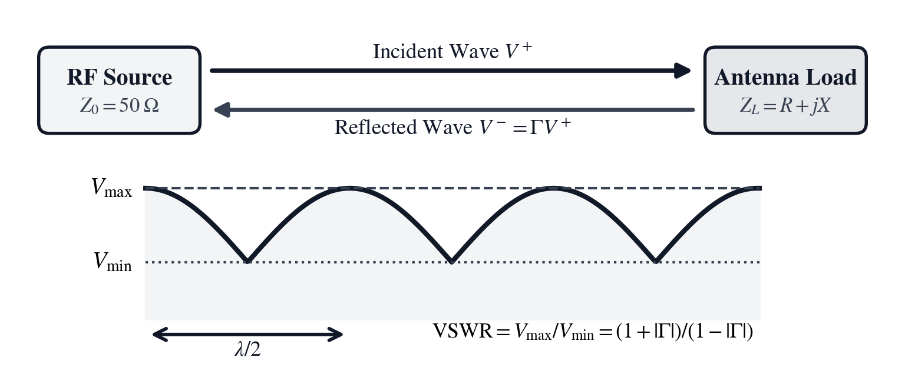
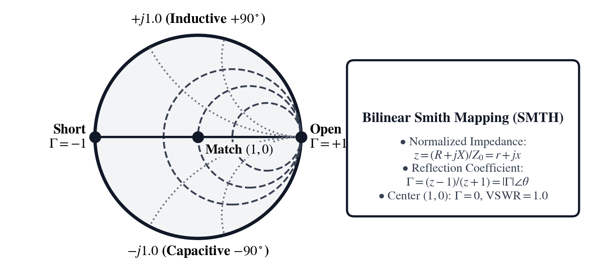
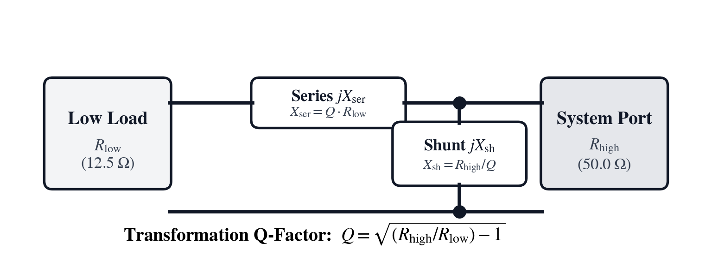
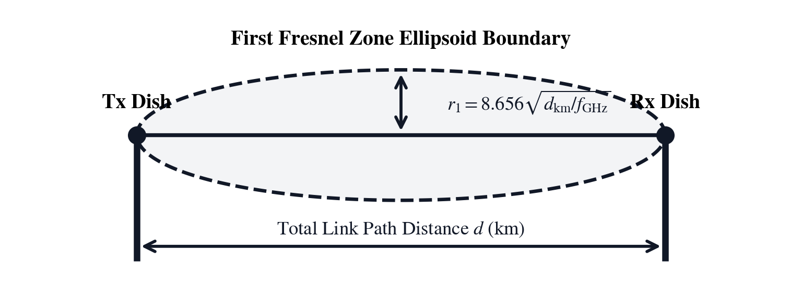
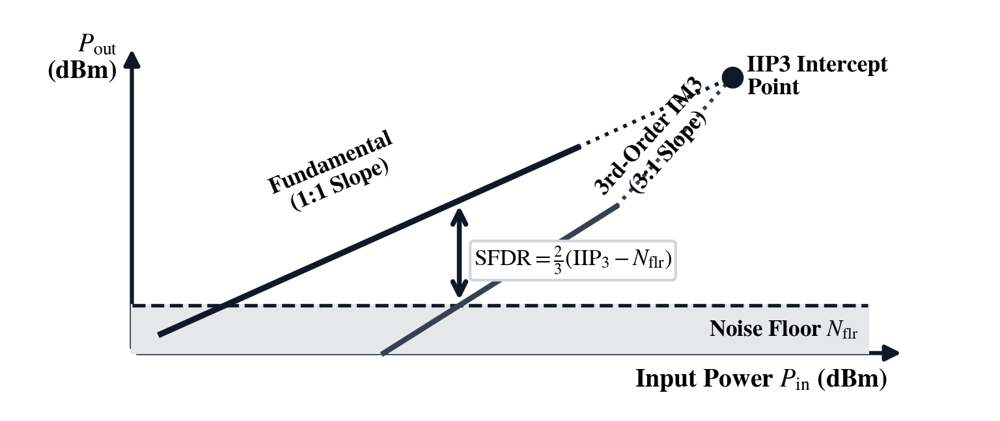

Unit V: Radio-Frequency Engineering, Transmission Lines & Link Budgets
Every electrical circuit exists in a continuous dialogue between the speed of light and the physical dimensions of its conductors. At direct current and commercial power frequencies, where electromagnetic waves span thousands of kilometers before completing a single cycle, electric potential across a circuit board appears instantaneous. Kirchhoff's laws treat conductors as zero-dimensional equipotential nodes. But when operating frequencies climb into the radio-frequency spectrum—where wavelengths contract from meters to millimeters—a wire ceases to behave as a simple connection. It becomes a transmission line: a continuous, distributed fabric of series inductance and shunt capacitance governed by Oliver Heaviside's wave equations. At these frequencies, an electrical signal is no longer a localized flow of charge; it is a guided electromagnetic wave propagating through dielectric space at a finite velocity, subject to reflection wherever it encounters an impedance boundary.
In the 1880s, the self-taught English physicist and former telegraph operator Oliver Heaviside formulated the telegrapher's equations to explain why undersea telegraph cables blurred crisp Morse code pulses into sluggish, overlapping currents. In low-frequency \(60\text{ Hz}\) building wiring, where an electromagnetic wave propagating near the speed of light (\(c \approx 3 \times 10^8\text{ m/s}\)) spans a physical wavelength \(\lambda = c / f\) of roughly five thousand kilometers, a circuit board ten centimeters wide shares a uniform instantaneous voltage and phase everywhere. Engineers can safely treat those conductors as simple lumped nodes governed by Kirchhoff's laws. Once the operating frequency rises seven orders of magnitude into the radio-frequency (RF, spoken as R-F) and microwave spectrum—from \(146\text{ MHz}\) mountain repeaters (\(\lambda \approx 2.05\text{ m}\)) and \(5.8\text{ GHz}\) microwave backhauls (\(\lambda \approx 5.17\text{ cm}\)) to \(28\text{ GHz}\) millimeter-wave radar (\(\lambda \approx 1.07\text{ cm}\))—a coaxial feedline or circuit-board microstrip spans multiple wavelengths. At those frequencies, Heaviside's distributed series inductance \(L'\) and shunt capacitance \(C'\) govern wave propagation through the line's characteristic impedance \(Z_0 = \sqrt{L' / C'}\).
On November 7, 1940, forty-mile-per-hour winds funneling across Puget Sound triggered aeroelastic flutter on the slender span of the Tacoma Narrows Bridge. Periodic Von Kármán wind-vortex shedding matched the natural torsional frequency of the suspension deck. With no mechanical damping to dissipate the excitation, energy accumulated cycle by cycle into standing mechanical waves that twisted the roadbed forty-five degrees out of plane until the bridge collapsed into the freezing waters below. That mechanical disaster mirrors the electromagnetic standing waves that build when high-frequency radio waves encounter an untuned, mismatched transmission line. Contrast that catastrophic resonance with Guglielmo Marconi's triumphant December 12, 1901 transatlantic transmission from Poldhu in Cornwall to Signal Hill in Newfoundland. Facing widespread scientific skepticism that electromagnetic waves could navigate the curvature of the Earth, Marconi succeeded across twenty-one hundred miles of open ocean only by meticulously tuning the coupled LC resonant circuits of his spark transmitter and aerial, matching reactive impedances to maximize electromagnetic power transfer and inaugurating the modern wireless century.
In May 1929, Bell Telephone Laboratories engineers Lloyd Espenschied and Herman Affel patented the modern concentric coaxial transmission line for wideband long-distance telephony and television. Analyzing an air-insulated copper coaxial cylinder of outer shield inner diameter \(D\) and center-conductor diameter \(d\), they discovered a fundamental physical trade-off. High-voltage dielectric breakdown power peaks at a diameter ratio of \(D / d \approx 1.65\) (\(Z_0 \approx 30\ \Omega\)), whereas resistive skin-effect attenuation in the copper conductors reaches its minimum at \(D / d \approx 3.59\) (\(Z_0 \approx 77\ \Omega\)). Two-way radio transmitters and laboratory test instruments standardized on the geometric compromise of \(Z_0 = 50\ \Omega\), while receive-only television broadcast and broadband cable networks adopted \(Z_0 = 75\ \Omega\) to minimize signal loss over kilometer-long runs. Whenever a forward-traveling wave on a \(Z_0\) line encounters a detuned antenna whose complex load impedance \(Z_L = R + jX\) differs from \(Z_0\), boundary continuity of the electric and magnetic fields launches a reflected wave \(\Gamma\) backward toward the transmitter, creating stationary voltage standing waves and return loss. To spare engineers tedious complex-number division when synthesizing quarter-wave transformers and reactive L-networks, Phillip Hagar Smith invented the Smith Chart at Bell Labs in 1939—a brilliant conformal stereographic mapping that transforms the infinite right-half complex impedance plane into a closed unit circle where transmission-line rotations become simple angular sweeps.
This reflection boundary formulation serves as a direct structural bridge across our curriculum: the mathematical anatomy of wave reflection is universal. When a guided electromagnetic wave on a \(Z_0\) transmission line strikes an impedance discontinuity \(Z_L\), the complex reflection coefficient \(\Gamma = (Z_L - Z_0) / (Z_L + Z_0)\) dictates the fraction of amplitude and phase reflected backward. This is the exact mathematical isomorphism governing the acoustic standing waves and resonant room modes analyzed in Chapter 12: when a longitudinal sound pressure wave traveling through air (specific acoustic impedance \(Z_{\text{air}} \approx 415\text{ Pa}\cdot\text{s/m}\)) strikes a rigid concrete boundary (\(Z_{\text{wall}} \gg Z_{\text{air}}\)), the acoustic impedance mismatch sets the reflection coefficient to nearly \(+1\), superposing forward and reflected pressure waves into stationary spatial peaks and nulls (\(f_n = n \cdot v_s / (2L)\)). Exactly the same wave-boundary mechanics govern structural mechanical vibration: an impedance mismatch between connected mechanical elements (mass density times elastic wave speed) reflects kinetic stress waves, exciting destructive standing resonances such as the aeroelastic flutter that tore apart the Tacoma Narrows Bridge. In radio-frequency lines, concert halls, and suspension bridges, nature applies the identical harmonic boundary law: unabsorbed energy reflects across impedance steps to establish stationary wave interference patterns.
On real high-frequency transmission lines, distributed series conductor resistance from the radio-frequency skin effect and shunt dielectric conductance attenuate traveling waves exponentially as \(e^{-\alpha z}\). In the complex plane, the Smith chart maps reflection coefficient \(\Gamma = |\Gamma|e^{j\theta}\) directly to normalized impedance, where line attenuation causes impedance trajectories to spiral inward toward the \(50\ \Omega\) center as reflected power diminishes.
In practical field engineering, an acceptable standing-wave ratio on a sweep meter does not guarantee an operational channel. Oxidized connector barrels, loose copper braid clamps, and weathered metallic brackets act as microscopic semiconductor diodes. Under high-power transmit carrier excitation, these non-linear junctions generate Passive Intermodulation (PIM) distortion products whose spectral spurs fall directly into the co-located receiver passband, blinding sensitive front-ends to weak signals.
In the chapters that follow, we place the SC-50 RF & Microwave RPN calculator in the hands of field engineers confronting these exact challenges across three interconnected operational domains:
- Chapter 13: The Reflected Wave on the Mountain Repeater Coax explores guided wave propagation in coaxial transmission lines, the decibel-milliwatt scale, Standing Wave Ratio, return loss, conductor skin depth, quarter-wave impedance matching transformers, and lumped reactive L-networks.
- Chapter 14: Clearing the Ridge on a Twelve-Kilometer Microwave Backhaul scales outward from guided conductors to free-space radiation, deriving the Friis transmission equation, link margin accounting, Huygens wavelet diffraction, ellipsoidal Fresnel clearance zones, atmospheric absorption windows, ITU rain attenuation, and curved Earth bulge refraction.
- Chapter 15: Pulling a Weak Telemetry Signal Out of Thermal Noise descends to the microscopic quantum and thermodynamic boundaries of detection, calculating Johnson–Nyquist thermal noise floors, Friis cascaded amplifier noise figures, third-order intercept linearity (IIP3), spurious-free dynamic range (SFDR), monostatic radar range equations, and the absolute Shannon–Hartley channel capacity limit.
Every calculation is executed on the 4-register RPN stack, transforming abstract electromagnetic theory into rapid, verified, field-ready engineering decisions.
Chapter 13: The Reflected Wave on the Mountain Repeater Coax
After a February rime-ice storm sweeps across a nine-thousand-foot summit in the Sierra Nevada, Tower Rigging Lead Jackson and RF Engineer Priya snowshoe up to a remote emergency repeater shelter. The telemetry alarm on their \(146.0\text{ MHz}\) search-and-rescue VHF (very high frequency, spoken as V-H-F) repeater has tripped into high-reflected-power foldback. Driving a \(50\text{ W}\) (\(+47.0\text{ dBm}\)) solid-state power amplifier into a \(Z_0 = 50\ \Omega\) coaxial feedline, the repeater normally delivers nearly its full output into a tower-mounted dipole array. When Priya connects a vector network analyzer (VNA, spoken as V-N-A) to the bottom of the feedline, the instrument reveals that ice loading on the antenna elements has detuned the feedpoint to a complex load impedance of \(Z_L = 35 - j25\ \Omega\)—dropping the radiation resistance to \(35\ \Omega\) while introducing \(25\ \Omega\) of capacitive reactance.
On a high-frequency transmission line, an impedance mismatch does far more than reduce radiated signal strength. Because the electric and magnetic fields at the antenna terminals must satisfy Ohm's law for both the \(50\ \Omega\) cable and the \(35 - j25\ \Omega\) load simultaneously, a fraction of the incident voltage wave reflects backward down the coaxial line toward the transmitter. As the backward-traveling reflected wave interferes with the forward-traveling wave, it erects stationary voltage peaks and current troughs along the cable that can punch through coaxial dielectric insulation or destroy the collector junction of the output transistor.
Before climbing the icy tower or soldering an emergency matching network in the shelter, Jackson and Priya must convert the transmitter power into decibel-milliwatts (dBm, spoken as D-B-M or decibel-milliwatts), evaluate the complex reflection coefficient \(\Gamma\), Voltage Standing Wave Ratio (VSWR, spoken as viz-war or V-S-W-R), and Return Loss (RL) for \(Z_L = 35 - j25\ \Omega\), determine the physical length of a quarter-wavelength coaxial transformer, size the series inductance and shunt capacitance of a lumped reactive L-network, and calculate the resonant frequency of the tuning tank.
Transmission-Line Reflections, Standing Waves, and Decibel Power
When radio-frequency energy travels from a transmitter output stage to an antenna feedpoint, the coaxial cable behaves as a distributed electromagnetic waveguide. Tracking forward and reflected power along that waveguide requires anchoring power measurements to the logarithmic milliwatt scale and solving the boundary equations at the load.
Logarithmic Milliwatt Scaling and Characteristic Impedance
At radio frequencies, the comfortable assumptions of low-voltage direct-current circuitry dissolve: a simple copper wire ceases to be a passive path and becomes an active electromagnetic waveguide. In low-frequency direct-current or \(60\text{ Hz}\) alternating-current circuits, the physical length of a conductor is an infinitesimal fraction of the electromagnetic wavelength (\(\lambda = c/f = 5000\text{ km}\) at \(60\text{ Hz}\)). The electric charge across the entire wire moves in perfect unison, and Kirchhoff's voltage and current laws hold absolutely.
Once the operating frequency reaches the VHF, UHF, or microwave regime, however, the physical length of the cable spans a significant fraction of a wavelength, or multiple wavelengths. At \(146\text{ MHz}\), the wavelength in free space is \(\lambda \approx 2.05\text{ m}\), and inside a solid polyethylene coaxial line (\(\text{VF} = 0.66\)) it contracts to a mere \(1.35\text{ m}\). Voltage and current can no longer be treated as uniform across the wire; they travel as electromagnetic waves bounded by the inner and outer conductors. Oliver Heaviside's telegrapher's equations model the cable as a continuous, infinite cascade of infinitesimal series inductances \(L'\) (henries per meter) and shunt capacitances \(C'\) (farads per meter). The ratio of these distributed reactive parameters defines the line's intrinsic characteristic impedance: $\(Z_0 = \sqrt{\frac{L'}{C'}}\)$ For a coaxial transmission line with inner conductor diameter \(d\), outer shield inner diameter \(D\), and dielectric relative permittivity \(\varepsilon_r\), this characteristic impedance evaluates to: $\(Z_0 = \frac{138}{\sqrt{\varepsilon_r}} \log_{10}\left(\frac{D}{d}\right) = \frac{60}{\sqrt{\varepsilon_r}} \ln\left(\frac{D}{d}\right)\quad [\Omega]\)$
In 1929, Bell Telephone Laboratories engineers Lloyd Espenschied and Herman Affel investigated the optimal geometry for coaxial cables. They discovered two competing physical optima: 1. Maximum Voltage Breakdown Power: To maximize the dielectric breakdown voltage and power-carrying capacity of an air-dielectric line, the ratio of outer to inner diameter must equal \(D/d = e^{1/2} \approx 1.6487\), which yields a characteristic impedance of \(Z_0 \approx 30.0\ \Omega\). 2. Minimum Conductor Attenuation: To minimize resistive power dissipation caused by the skin effect in the copper conductors, the diameter ratio must equal \(D/d \approx 3.5911\), which yields a characteristic impedance of \(Z_0 \approx 76.7\ \Omega \approx 77\ \Omega\).
Because military transmitters and laboratory instrumentation required both robust power handling and low attenuation, the industry chose the geometric compromise of \(50.0\ \Omega\) (\(D/d \approx 2.30\)). For receive-only television distribution and long-haul cable networks where transmit power is negligible and minimizing signal attenuation over miles of cable is paramount, the industry standardized on \(75.0\ \Omega\).
To understand why a transmission line behaves so differently from a simple wire connection, consider an infinitesimal section of transmission line of differential length \(\Delta z\). Oliver Heaviside modeled this line segment as a distributed network containing series loop resistance \(R'\) (\(\Omega/\text{m}\)), series distributed inductance \(L'\) (\(\text{H/m}\)), shunt dielectric conductance \(G'\) (\(\text{S/m}\)), and shunt capacitance \(C'\) (\(\text{F/m}\)). Applying Kirchhoff's voltage law around the infinitesimal loop yields:
Dividing by \(\Delta z\) and taking the limit as \(\Delta z \to 0\) produces the first telegrapher's equation:
Similarly, applying Kirchhoff's current law to the upper conductor node yields:
Dividing by \(\Delta z\) and taking the limit \(\Delta z \to 0\) yields the second telegrapher's equation:
Under sinusoidal steady-state excitation with angular frequency \(\omega = 2\pi f\), time derivatives are replaced by multiplication by \(j\omega\) in phasor notation:
Differentiating the voltage equation with respect to \(z\) and substituting the current derivative produces the second-order electromagnetic Helmholtz wave equation for the guided line:
where the complex propagation constant \(\gamma = \alpha + j\beta\) is given by:
The real part \(\alpha\) represents line attenuation in nepers per meter (\(\text{Np/m}\), where \(1\text{ Np} \approx 8.686\text{ dB}\)), and the imaginary part \(\beta\) represents the phase constant in radians per meter (\(\beta = 2\pi / \lambda\)). The general solution consists of the superposition of two forward- and backward-traveling waves:
where the characteristic impedance \(Z_0\) is the ratio of voltage to current for an uninterrupted traveling wave:
In low-loss radio-frequency lines where conductor resistance and dielectric conductance are small compared to reactive terms (\(R' \ll \omega L'\) and \(G' \ll \omega C'\)), binomial expansion simplifies these parameters into pure lossless forms:
The phase velocity of the guided wave is \(v_p = \omega / \beta = 1 / \sqrt{L' C'} = c / \sqrt{\varepsilon_r}\), where \(\varepsilon_r\) is the relative dielectric permittivity of the insulating medium (for solid PTFE, \(\varepsilon_r \approx 2.1\), giving \(v_p \approx 0.69 c\)).
Because radio signals span eighteen orders of magnitude—from kilowatt broadcast transmitters down to femtowatt deep-space telemetry carriers—RF engineering anchors its absolute power scale to one milliwatt (\(1\text{ mW} = 10^{-3}\text{ W}\)). Taking ten times the base-ten logarithm of milliwatt power converts linear watts into decibel-milliwatts (\(\text{dBm}\)). Across a transmission line of characteristic impedance \(Z_0\), root-mean-square radio-frequency voltage follows Ohm's law, equaling the square root of the power in watts multiplied by the impedance:
Eq. 13.1 — Decibel-Milliwatt Power Scaling and Root-Mean-Square Line Voltage $\(P_{\text{dBm}} = 10 \log_{10}\left(\frac{P_{\text{mW}}}{1\text{ mW}}\right) = 10 \log_{10}(P_{\text{W}}) + 30\)$ $\(V_{\text{rms}} = \sqrt{P_{\text{W}} \cdot Z_0}\)$
In these expressions, \(P_{\text{dBm}}\) is the absolute power level in \(\text{dBm}\), \(P_{\text{mW}}\) is linear power in milliwatts, \(P_{\text{W}} = P_{\text{mW}} / 1000\) is linear power in watts, and \(Z_0\) is the transmission-line characteristic impedance in ohms (\(\Omega\), standardized at \(50\ \Omega\) for transmitters and \(75\ \Omega\) for video/broadcast coax).
Every \(+10\text{ dB}\) step multiplies linear power tenfold and every \(+3.0103\text{ dB}\) step doubles linear power: \(0\text{ dBm}\) equals \(\mathbf{1.0\text{ mW}}\) (\(V_{\text{rms}} \approx 0.2236\text{ V}\) across \(50\ \Omega\)), \(+20\text{ dBm}\) equals \(\mathbf{100\text{ mW}}\) (\(0.10\text{ W}\)), \(+30\text{ dBm}\) equals \(1000\text{ mW} = \mathbf{1.0\text{ W}}\) (\(V_{\text{rms}} \approx 7.071\text{ V}\) across \(50\ \Omega\)), and our mountain repeater's \(P_{\text{W}} = 50\text{ W}\) (\(50{,}000\text{ mW}\)) output corresponds to \(P_{\text{dBm}} = 10\log_{10}(50{,}000) \approx \mathbf{+46.990\text{ dBm}}\), developing a matched root-mean-square voltage of \(V_{\text{rms}} = \sqrt{50 \times 50} = \mathbf{50.0\text{ V}}\) across the \(50\ \Omega\) line.
Complex Reflection Coefficient, Standing Wave Ratio, Return Loss, and Mismatch Loss
When a forward-traveling electromagnetic wave with voltage phasor \(V^+\) and current phasor \(I^+ = V^+ / Z_0\) propagates down a lossless transmission line of real characteristic impedance \(Z_0\) and reaches an antenna of complex load impedance \(Z_L = R + jX\) ([jX] in [f] [CMPLX], where \(R\) is series resistance and \(X\) is inductive \(+jX\) or capacitive \(-jX\) reactance in ohms), boundary continuity requires total terminal voltage \(V_L = V^+ + V^-\) and total terminal current \(I_L = (V^+ - V^-) / Z_0\) to satisfy \(V_L / I_L = Z_L\).
When a guided electromagnetic wave encounters an antenna whose complex impedance differs from the line's characteristic impedance, the boundary conditions of electromagnetism demand that a fraction of the voltage reflect backward. The complex reflection coefficient divides the difference between load impedance and characteristic impedance by their sum. Its magnitude measures the fraction of voltage reflected, while its angle reveals the phase shift:
Eq. 13.2 — Complex Voltage Reflection Coefficient and Standing Wave Ratio $\(\Gamma = \frac{Z_L - Z_0}{Z_L + Z_0} = |\Gamma| \angle \theta\)$ $\(\text{VSWR} = \frac{1 + |\Gamma|}{1 - |\Gamma|}\)$

As the reflected voltage wave \(V^-\) travels backward and superposes with the incident wave \(V^+\), constructive interference produces stationary voltage peaks while destructive interference produces voltage troughs. The ratio of peak to trough voltage defines the Voltage Standing Wave Ratio (\(\text{VSWR}\)). Expressing the fraction of power reflected in decibels yields the Return Loss (\(\text{RL}_{\text{dB}}\)): twenty times the negative base-ten logarithm of reflection magnitude \(|\Gamma|\). Inverting the standing wave relation \(|\Gamma| = (\text{VSWR} - 1)/(\text{VSWR} + 1)\) links Return Loss directly to VSWR: higher return loss means less reflected power and a superior impedance match (\(RL \to \infty\) for a perfect match, \(RL \ge 20\text{ dB}\) for professional installations, and \(RL = 0\text{ dB}\) for total reflection). The reduction in forward power delivered into the antenna is Mismatch Loss (\(\text{ML}_{\text{dB}}\)), evaluated from ten times the negative base-ten logarithm of one minus the reflected power fraction:
Eq. 13.3 — Return Loss and Mismatch Loss $\(\text{RL}_{\text{dB}} = -20 \log_{10}|\Gamma| = -20 \log_{10}\left(\frac{\text{VSWR}-1}{\text{VSWR}+1}\right)\)$ $\(\text{ML}_{\text{dB}} = -10 \log_{10}\left(1 - |\Gamma|^2\right)\)$
This reflection boundary formulation serves as a direct structural bridge across our curriculum: the mathematical anatomy of wave reflection is universal. When a guided electromagnetic wave on a \(Z_0\) transmission line strikes an impedance discontinuity \(Z_L\), the complex reflection coefficient \(\Gamma = (Z_L - Z_0) / (Z_L + Z_0)\) dictates the fraction of amplitude and phase reflected backward. This is the exact mathematical isomorphism governing the acoustic standing waves and resonant room modes analyzed in Chapter 12: when a longitudinal sound pressure wave traveling through air (specific acoustic impedance \(Z_{\text{air}} \approx 415\text{ Pa}\cdot\text{s/m}\)) strikes a rigid concrete boundary (\(Z_{\text{wall}} \gg Z_{\text{air}}\)), the acoustic impedance mismatch sets the reflection coefficient to nearly \(+1\), superposing forward and reflected pressure waves into stationary spatial peaks and nulls (\(f_n = n \cdot v_s / (2L)\)). Exactly the same wave-boundary mechanics govern structural mechanical vibration: an impedance mismatch between connected mechanical elements (mass density times elastic wave speed) reflects kinetic stress waves, exciting destructive standing resonances such as the aeroelastic flutter that tore apart the Tacoma Narrows Bridge. In radio-frequency lines, concert halls, and suspension bridges, nature applies the identical harmonic boundary law: unabsorbed energy reflects across impedance steps to establish stationary wave interference patterns.
On real high-frequency transmission lines, distributed series conductor resistance from the radio-frequency skin effect and shunt dielectric conductance attenuate traveling waves exponentially as \(e^{-\alpha z}\). In the complex plane, the Smith chart maps reflection coefficient \(\Gamma = |\Gamma|e^{j\theta}\) directly to normalized impedance, where line attenuation causes impedance trajectories to spiral inward toward the \(50\ \Omega\) center as reflected power diminishes.
In practical field engineering, an acceptable standing-wave ratio on a sweep meter does not guarantee an operational channel. Oxidized connector barrels, loose copper braid clamps, and weathered metallic brackets act as microscopic semiconductor diodes. Under high-power transmit carrier excitation, these non-linear junctions generate Passive Intermodulation (PIM) distortion products whose spectral spurs fall directly into the co-located receiver passband, blinding sensitive front-ends to weak signals.
Conductor Skin Depth and Microwave Surface Conduction
On real high-frequency transmission lines, distributed series conductor resistance from the radio-frequency skin effect and shunt dielectric conductance attenuate traveling waves exponentially as \(e^{-\alpha z}\). In direct-current circuits, charge carriers distribute uniformly across the entire cross-sectional area of a wire. As the alternating signal frequency climbs into the megahertz and gigahertz regimes, however, the rapidly oscillating magnetic field induced inside the conductor creates localized eddy currents that oppose current flow in the conductor's interior while reinforcing it at the outer perimeter. Consequently, the alternating current density decays exponentially from the conductor's exterior boundary inward.
The characteristic depth at which the current density falls to \(1/e\) (approximately \(36.8\%\)) of its surface value is the Skin Depth (\(\delta\)):
Eq. 13.4 — High-Frequency Conductor Skin Depth $\(\delta = \sqrt{\frac{\rho}{\pi f \mu}} = \sqrt{\frac{1}{\pi f \sigma \mu_0 \mu_r}}\)$
Here \(\rho\) is the conductor volume resistivity in ohm-meters (\(\Omega\cdot\text{m}\), where annealed copper has \(\rho \approx 1.68 \times 10^{-8}\ \Omega\cdot\text{m}\) and electrical conductivity \(\sigma \approx 5.80 \times 10^7\text{ S/m}\)), \(f\) is the electromagnetic carrier frequency in hertz (\(\text{Hz}\)), and \(\mu = \mu_0 \mu_r\) is the magnetic permeability of the medium (\(\mu_0 = 4\pi \times 10^{-7}\text{ H/m}\), with relative permeability \(\mu_r \approx 1.0\) for non-ferromagnetic conductors such as copper, silver, and aluminum).
At microwave frequencies, this exponential surface crowding becomes extreme. At \(f = 6\text{ GHz}\) (\(6 \times 10^9\text{ Hz}\)), the skin depth in high-conductivity copper contracts to:
At \(6\text{ GHz}\), the radio-frequency current flows exclusively within a microscopic \(0.85\ \mu\text{m}\) surface layer—less than one-fiftieth the thickness of a human hair. Within four skin depths (\(4\delta \approx 3.4\ \mu\text{m}\)), more than \(98\%\) of the total current is carried. The interior core of the conductor carries virtually zero electromagnetic energy. This physical reality dictates microwave mechanical engineering: fabricating coaxial center conductors, cavity filters, or rectangular waveguides from solid precious metals would squander enormous cost and add excessive mechanical mass without reducing RF loss. Instead, microwave transmission lines and waveguide plumbing are manufactured from structurally rigid, lightweight metals such as brass or aluminum, and electroplated on their conduction perimeter with a thin, micro-inch layer of high-purity silver (\(\rho_{\text{silver}} \approx 1.59 \times 10^{-8}\ \Omega\cdot\text{m}\), yielding \(\delta \approx 0.82\ \mu\text{m}\)) or gold-flashed copper (typically \(50\text{ to }100\ \mu\text{in}\), or \(1.3\text{ to }2.5\ \mu\text{m}\) thick) that fully encapsulates the active RF skin-depth envelope.
Conformal Smith Chart Transformations and Reactive Matching Networks
To eliminate the reflected wave and restore a \(1.00 : 1\) standing wave ratio on the main \(50\ \Omega\) feedline, the engineer must insert a lossless impedance-matching network between the coaxial trunk and the antenna terminals.
Normalized Impedance Mapping and Quarter-Wave Transformers
To appreciate the mathematical genius of the Smith Chart, consider the bilinear conformal transformation connecting normalized complex impedance \(z = Z / Z_0 = r + jx\) to the reflection coefficient \(\Gamma = u + jv\):
Multiplying the numerator and denominator by the complex conjugate \((1 - u + jv)\) resolves \(z\) into its explicit real and imaginary components:
Equating the real parts gives the normalized resistance relation:
This proves that every contour of constant resistance \(r\) in the complex impedance plane maps to a perfect circle in the \((\operatorname{Re}(\Gamma), \operatorname{Im}(\Gamma))\) plane, with center at \((u, v) = \left(\frac{r}{r+1}, 0\right)\) on the real axis and radius \(R_r = \frac{1}{r+1}\). All resistance circles pass through the point \((1, 0)\), representing an infinite open-circuit impedance.
Equating the imaginary parts yields the normalized reactance relation:
This proves that every contour of constant reactance \(x\) maps to an orthogonal circle centered at \((u, v) = \left(1, \frac{1}{x}\right)\) with radius \(R_x = \frac{1}{|x|}\). Inductive reactances (\(x > 0\)) occupy the upper half of the disk; capacitive reactances (\(x < 0\)) occupy the lower half; and the horizontal equator represents pure resistance (\(x = 0\)).
When moving along a lossless transmission line of physical length \(\ell\) toward the generator, the load reflection coefficient rotates in the complex plane by an angle of twice the electrical length:
Because the magnitude \(|\Gamma_L|\) remains constant, the impedance point traces a concentric circle centered at the origin \((0, 0)\)—the constant-VSWR circle. A complete \(360^\circ\) circle revolution corresponds to \(2\beta \ell = 2\pi\), or \(\ell = \lambda / 2\). A half revolution (\(180^\circ\)) corresponds to \(\ell = \lambda / 4\), performing the exact impedance inversion of a quarter-wave transformer.
Dividing any complex load impedance \(Z_L = R + jX\) by the system reference impedance \(Z_0\) produces the dimensionless normalized impedance \(z = Z_L / Z_0 = (R / Z_0) + j(X / Z_0) = r + jx\) (for our \(35 - j25\ \Omega\) repeater load on a \(50\ \Omega\) line, \(r = 35/50 = \mathbf{0.70}\) and \(x = -25/50 = \mathbf{-0.50}\)). Under the bilinear Möbius transformation \(\Gamma = (z - 1) / (z + 1)\), Phillip H. Smith showed in 1939 that the entire right half-plane of passive resistances (\(r \ge 0\)) maps conformally into the unit circle \(|\Gamma| \le 1\) on the Smith Chart ([Γ], [g] [▦]).

The mathematical elegance of the Smith Chart lies in its stereographic conformal projection: - Straight lines of constant resistance \(R\) in the complex impedance plane map into closed circles tangent to the point \(\Gamma = +1\) (the open-circuit point at the right edge of the chart). - Straight lines of constant reactance \(X\) map into circular arcs that terminate perpendicularly on the outer unit perimeter. - Purely resistive loads sit along the horizontal real axis (\(X = 0\)). - Upper half of the chart represents inductive reactances (\(+jX\)). - Lower half represents capacitive reactances (\(-jX\)). - The outer boundary circle (\(|\Gamma| = 1.0\)) represents pure lossless reactances where all incident power is reflected.
At the center origin of the Smith Chart (\(\Gamma = 0 + j0\)), the normalized impedance is \(z = 1 + j0\) (\(Z_L = Z_0\)). Moving a physical distance \(\ell\) along a lossless transmission line of wavelength \(\lambda\) ([f] [λ/L]) rotates the reflection phasor \(\Gamma\) clockwise around the origin at constant radius \(|\Gamma|\) through an electrical phase angle of \(2\beta\ell = 4\pi\ell / \lambda\). When the line section has an electrical length of one quarter-wavelength (\(\ell = \lambda / 4\)), the rotation angle is \(2\beta(\lambda / 4) = \pi\text{ radians}\) (\(180^\circ\)), which inverts normalized impedance (\(z_{\text{in}} = 1 / z_L\)).
To match a source impedance to a load resistance, a quarter-wave section's characteristic impedance must equal the geometric mean of the two port impedances. The physical length of the stub equals one quarter of the free-space wavelength scaled by the cable's velocity factor:
Eq. 13.5 — Quarter-Wave Matching Transformer and Physical Stub Length $\(\ell_{\lambda/4} = \frac{\lambda}{4} \cdot \text{VF} = \frac{c}{4 f} \cdot \text{VF}\)$ $\(Z_{\text{match}} = \sqrt{Z_S \cdot Z_L}\)$
Here \(f_{\text{MHz}}\) is the operating frequency in megahertz, \(\lambda = c/f = 299.792458 / f_{\text{MHz}}\text{ m}\) is the free-space wavelength in meters, \(\text{VF} = 1 / \sqrt{\varepsilon_r}\) is the coaxial cable velocity factor, and \(Z_{\text{match}}\) is the geometric-mean characteristic impedance in ohms. At the repeater frequency of \(f = 146.0\text{ MHz}\), the free-space wavelength is \(\lambda = 299.792458 / 146.0 \approx \mathbf{2.0534\text{ m}}\) and a free-space quarter-wave whip measures \(\ell_{\lambda/4} = 2.0534 / 4 \approx \mathbf{0.5133\text{ m}}\) (\(51.33\text{ cm}\)). Cut from foam-dielectric coaxial cable with velocity factor \(\text{VF} = 0.82\), the physical quarter-wave stub length is \(0.5133 \times 0.82 \approx \mathbf{0.4209\text{ m}}\) (\(42.1\text{ cm}\)). To match a \(Z_S = 50\ \Omega\) line to a \(Z_L = 112.5\ \Omega\) antenna resistance, the required quarter-wave section impedance is \(Z_{\text{match}} = \sqrt{50 \times 112.5} = \sqrt{5625} = \mathbf{75.0\ \Omega}\), allowing standard \(75\ \Omega\) video coax to serve as an exact quarter-wave transformer.
Lumped L-Network Synthesis and Resonant Tank Circuits
When matching a lower resistance \(R_{\text{low}}\) up to a higher resistance \(R_{\text{high}}\) at VHF or HF frequencies using compact lumped inductors and capacitors, a two-element reactive L-network ([Γ]) places a reactive element \(X_{\text{series}}\) in series with \(R_{\text{low}}\) and a complementary opposite-sign reactive element \(X_{\text{shunt}}\) in parallel across \(R_{\text{high}}\).
The circuit's operating quality factor \(Q\) is the square root of the ratio of high resistance to low resistance minus one. The required series reactance equals the quality factor times the lower resistance, while the shunt reactance equals the higher resistance divided by the quality factor. In resonant LC circuits, inductive and capacitive reactances cancel at the resonant frequency \(f_0\):
Eq. 13.6 — L-Network Matching Reactances and LC Resonance $\(Q = \sqrt{\frac{R_{\text{high}}}{R_{\text{low}}} - 1}\)$ $\(|X_{\text{series}}| = Q \cdot R_{\text{low}}\)$ $\(|X_{\text{shunt}}| = \frac{R_{\text{high}}}{Q}\)$ $\(f_0 = \frac{1}{2\pi \sqrt{L \cdot C}}\)$

Consider matching our repeater's resistive component \(R_{\text{low}} = 35\ \Omega\) up to \(R_{\text{high}} = 50\ \Omega\) at \(f = 146.0\text{ MHz}\). The required nodal quality factor is \(Q = \sqrt{(50 / 35) - 1} = \sqrt{0.42857} \approx \mathbf{0.6547}\), which specifies a net series inductive reactance of \(|X_{\text{series}}| = 0.6547 \times 35 \approx \mathbf{22.91\ \Omega}\) and a shunt capacitive reactance of \(|X_{\text{shunt}}| = 50 / 0.6547 \approx \mathbf{76.38\ \Omega}\). Because the iced antenna already exhibits \(-j25\ \Omega\) of series capacitive reactance, the series inductor must simultaneously cancel that \(-25\ \Omega\) reactance and supply \(+22.91\ \Omega\) of net inductive reactance, requiring a total inductive reactance of \(X_L = 25 + 22.91 = \mathbf{47.91\ \Omega}\) (\(L = 47.91 / (2\pi \times 146 \times 10^6) \approx \mathbf{52.23\text{ nH}}\)) paired with a shunt capacitor of \(C = 1 / (2\pi \times 146 \times 10^6 \times 76.38) \approx \mathbf{14.27\text{ pF}}\). Similarly, when stepping a \(R_{\text{low}} = 10\ \Omega\) power-transistor collector up to \(R_{\text{high}} = 50\ \Omega\), the nodal quality factor is \(Q = \sqrt{(50/10) - 1} = \mathbf{2.00}\), giving \(|X_{\text{series}}| = \mathbf{20.0\ \Omega}\) and \(|X_{\text{shunt}}| = \mathbf{25.0\ \Omega}\).
Diagnosing Mismatches and Synthesizing Matching Networks on the Stack
The SC-50 combines Native Complex RF Mode ([f] [CMPLX], activating the six top-row softkeys [Γ], [Z←Γ], [jX], [SWR], [RL], [Z₀]) for complex load impedances \(Z_L = R + jX\) against toggleable system impedance [g] [Z₀] (\(50\ \Omega \leftrightarrow 75\ \Omega\)), automatic Smith Chart parameter logging ([g] [▦]), decibel-milliwatt scaling ([dBm], [f] [▸dBm], [g] [▸mW], [g] [▸dBW]), and matching primitives ([SWR], [Γ], [g] [TLN], [f] [f₀], [g] [fc], [f] [XLC], [f] [λ/L]) with the Bidirectional Equation Solver Workspaces ([g] [SOLVE] / [XEQ]) on [SWR] (S = (1 + G) / (1 - G), softkeys [S], [G]), [Γ] (ZMAT: Z = √(S × L), softkeys [Z], [S], [L]), and [f] [f₀] (F0: F = 1 / (2π√(L×C)), softkeys [F], [L], [c]):
| Button / Menu | Operation | Register Z | Register Y | Register X | Governing Expression & Solver Schema |
|---|---|---|---|---|---|
[dBm] / [f] [▸dBm] |
Linear Power to dBm | — | — | Power \(P_{\text{mW}}\) (\(\text{mW}\)) | \(P_{\text{dBm}} = 10 \log_{10}(P_{\text{mW}})\) (paired with [g] [▸dBW], [f] [▸dBV], [g] [▸μV]) |
[g] [▸mW] |
dBm to Linear Power | — | — | Power \(P_{\text{dBm}}\) (\(\text{dBm}\)) | \(P_{\text{mW}} = 10^{P_{\text{dBm}} / 10}\) |
[f] [CMPLX] |
Native Complex RF Menu | — | Resistance \(R\) (\(\Omega\)) | Reactance \(X\) (\(\Omega\)) | Softkeys: [Γ] [Z←Γ] [jX] [SWR] [RL] [Z₀] (\(Z_L = R + jX \leftrightarrow \Gamma\)) |
[SWR] |
Standing Wave Ratio | — | — | \(\lvert\Gamma\rvert\) or \(Z_L = R + jX\) | Stack: \(\text{VSWR} = \frac{1 + \lvert\Gamma\rvert}{1 - \lvert\Gamma\rvert}\) (fills [g] [▦]); Solver: S = (1+G)/(1-G) ([S],[G]) |
[RL] |
Return Loss (\(\text{dB}\)) | — | — | \(\Gamma\) or \(Z_L\) | Softkey in [f] [CMPLX]: \(\text{RL}_{\text{dB}} = -20 \log_{10}\lvert\Gamma\rvert\) |
[Γ] |
Smith Match & [g] [Z₀] Solver | — | Source \(Z_S\) (\(\Omega\)) | Load \(Z_L\) (\(\Omega\)) | Stack: \(Q = \sqrt{(R_{\text{high}} / R_{\text{low}}) - 1}\); Opens [g] [Z₀] (Z = √(S×L), [Z],[S],[L]) |
[g] [TLN] |
\(\lambda/4\) Transformer Impedance | — | Source \(Z_S\) (\(\Omega\)) | Load \(Z_L\) (\(\Omega\)) | Immediate stack: \(Z_{\text{match}} = \sqrt{Z_S \cdot Z_L}\) |
[f] [f₀] / [g] [fc] |
LC Resonance & RC Cutoff | — | Inductance \(L\) (\(\text{H}\)) | Capacitance \(C\) (\(\text{F}\)) | Stack: \(f_0 = \frac{1}{2\pi\sqrt{L \cdot C}}\); Solver: F = 1 / (2π√(L×C)) ([F],[L],[c]) |
[f] [λ/L] |
Free-Space Wavelength | — | — | Frequency \(f_{\text{MHz}}\) | \(\lambda = 299.792458 / f_{\text{MHz}}\) (\(\text{m}\)) |
Evaluating Complex Repeater Mismatch, Return Loss, and Reflected Watts on the Stack
Evaluating complex load impedance (\(Z_L = 35 - j25\ \Omega\)), standing-wave ratio, return loss, and reflected power on the transmission line resolves across the four registers:
| Keystroke | Register T | Register Z | Register Y | Register X | What Happens on the Stack |
|---|---|---|---|---|---|
[f] [CMPLX] 35 [ENTER] 25 [+/-] [jX] [+] |
\(0\) | \(0\) | \(0\) | \(35 - j25\) | Pack complex load impedance \(Z_L = 35 - j25\ \Omega\) into Register \(X\) |
[SWR] |
\(0\) | \(0\) | \(0\) | \(1.981\) | Evaluate \(\text{VSWR} = 1.981 : 1\) against \(Z_0 = 50\ \Omega\) ([Z₀]) and fill Smith table [g] [▦] |
35 [ENTER] 25 [+/-] [jX] [+] [RL] |
\(0\) | \(0\) | \(1.981\) | \(9.653\) | Compute Return Loss \(\text{RL} = 9.653\text{ dB}\) from complex load (\(\lvert\Gamma\rvert = 0.3291\)) |
50000 [f] [▸dBm] [x⇄y] [-] |
\(0\) | \(0\) | \(1.981\) | \(37.337\) | Subtract \(9.653\text{ dB}\) return loss from \(+46.990\text{ dBm}\) (\(50\text{ W}\)) to get reflected dBm |
[g] [▸mW] 1000 [÷] |
\(0\) | \(0\) | \(1.981\) | \(5.416\) | Convert \(+37.337\text{ dBm}\) to milliwatts (\(5416\text{ mW}\)) and divide by \(1000\) for \(5.416\text{ W}\) |
The stack confirms that \(\mathbf{5.42\text{ W}}\) of RF power is reflecting back down the line at \(\text{VSWR} = \mathbf{1.981 : 1}\), explaining why the repeater's protection circuit triggered.
Designing a High-Power Marine Transceiver L-Network on the Stack
To experience how the 4-register stack banishes scratchpad fatigue in the field, follow Jackson as he resolves a severe antenna mismatch on a \(100\text{ W}\) (\(+50.0\text{ dBm}\)) marine HF transceiver operating at \(f = 14.20\text{ MHz}\) into a \(Z_0 = 50\ \Omega\) feedline. A storm has detuned the long-wire antenna to \(Z_L = 20 + j40\ \Omega\). Jackson must determine the complex reflection coefficient \(\Gamma\), the standing wave ratio, the return loss, the reflected power in watts, and synthesize a low-pass L-network (\(Q, X_{\text{series}}, X_{\text{shunt}}, L, C\)) to match the \(20\ \Omega\) real part up to \(50\ \Omega\) while canceling the \(+j40\ \Omega\) inductive reactance:
| Keystroke Sequence | Reg T | Reg Z | Reg Y | Reg X | RF Spectrum Scenario Stack Walkthrough |
|---|---|---|---|---|---|
[f] [CMPLX] 20 [ENTER] 40 [jX] [+] |
\(0\) | \(0\) | \(0\) | \(20 + j40\) | Pack load impedance \(Z_L = 20 + j40\ \Omega\) into Register \(X\) |
[SWR] |
\(0\) | \(0\) | \(0\) | \(4.266\) | Evaluate \(\text{VSWR} = \mathbf{4.266 : 1}\) ($ |
20 [ENTER] 40 [jX] [+] [RL] |
\(0\) | \(0\) | \(4.266\) | \(4.149\) | Compute Return Loss \(\text{RL} = \mathbf{4.149\text{ dB}}\) |
100000 [f] [▸dBm] [x⇄y] [-] |
\(0\) | \(0\) | \(4.266\) | \(45.851\) | Subtract return loss from \(+50\text{ dBm}\) (\(100\text{ W}\)) to get reflected power \(= +45.85\text{ dBm}\) |
[g] [▸mW] 1000 [÷] |
\(0\) | \(0\) | \(4.266\) | \(38.465\) | Reflected power = \(\mathbf{38.46\text{ W}}\) (\(38.5\%\) of transmitter power reflected) |
50 [ENTER] 20 [Γ] |
\(0\) | \(4.266\) | \(38.465\) | \(1.2247\) | Evaluate L-network quality factor \(Q = \sqrt{(50/20) - 1} = \mathbf{1.2247}\) |
20 [×] |
\(4.266\) | \(38.465\) | \(1.2247\) | \(24.495\) | Series reactance $ |
50 [ENTER] 1.2247 [÷] |
\(38.465\) | \(1.2247\) | \(24.495\) | \(40.826\) | Shunt reactance $ |
2 [g] [π] [×] 14.2 [E] 6 [×] 40.826 [×] 1/x |
\(1.2247\) | \(24.495\) | \(40.826\) | \(2.746\text{e}-10\) | Shunt capacitor \(C = 1 / (2\pi \times 14.2\text{ MHz} \times 40.83) = \mathbf{274.6\text{ pF}}\) |
To cancel the antenna's \(+j40\ \Omega\) inductive reactance and simultaneously provide the required \(-j24.5\ \Omega\) series capacitive matching reactance, Jackson installs a series variable capacitor providing \(X_C = -(40 + 24.5) = -64.5\ \Omega\) (\(C_{\text{series}} = 1 / (2\pi \times 14.2\text{ MHz} \times 64.5) \approx \mathbf{173.9\text{ pF}}\)) paired with the \(274.6\text{ pF}\) shunt capacitor. The standing wave ratio drops immediately from \(4.27:1\) to \(1.02:1\), restoring full \(100\text{ W}\) radiation into the antenna without amplifier foldback.
Designing Quarter-Wave Stubs, L-Networks, and Resonant Tanks on the Stack
Synthesizing quarter-wave coaxial transformers, reactive L-network parameters, and LC resonant tanks proceeds across the four registers:
| Keystroke | Register T | Register Z | Register Y | Register X | What Happens on the Stack |
|---|---|---|---|---|---|
146 [f] [λ/L] 4 [÷] |
\(0\) | \(0\) | \(0\) | \(0.5133\) | Compute free-space \(\lambda = 2.0534\text{ m}\) at \(146\text{ MHz}\) and divide by \(4\) for \(\ell_{\lambda/4} = 0.5133\text{ m}\) |
50 [ENTER] 112.5 [g] [TLN] |
\(0\) | \(0\) | \(0.5133\) | \(75\) | Quarter-wave transformer impedance \(Z_{\text{match}} = \sqrt{50 \times 112.5} = 75.0\ \Omega\) |
50 [ENTER] 10 [Γ] |
\(0.51334\) | \(0.5133\) | \(75\) | \(2\) | L-network nodal quality factor \(Q = \sqrt{(50/10) - 1} = 2.00\) (and opens [g] [Z₀] workspace) |
1 [E] 7 [+/-] [ENTER] 1 [E] 11 [+/-] [f] [f₀] |
\(75\) | \(75\) | \(2\) | \(1.5915\text{e}8\) | Resonant frequency \(f_0 = 159.155\text{ MHz}\) for \(L = 100\text{ nH}\) and \(C = 10\text{ pF}\) |
Multiplying the L-network quality factor \(Q = 2.00\) by \(R_{\text{low}} = 10\ \Omega\) gives series reactance \(|X_{\text{series}}| = \mathbf{20.0\ \Omega}\), while dividing \(R_{\text{high}} = 50\ \Omega\) by \(Q = 2.00\) gives shunt reactance \(|X_{\text{shunt}}| = \mathbf{25.0\ \Omega}\).
Back-Solving Resonant Tuning Capacitance and Reflection Limits in the Solver Workspace
Suppose an auxiliary \(433.92\text{ MHz}\) (\(4.3392 \times 10^8\text{ Hz}\)) UHF telemetry link exhibits \(L = 18.5\text{ nH}\) (\(1.85 \times 10^{-8}\text{ H}\)) of parasitic feedpoint inductance and the engineer must select the exact series capacitor \(C\) that resonates the feedpoint at \(433.92\text{ MHz}\), while also verifying the maximum reflection magnitude \(|\Gamma|\) ([G]) allowed by a \(\text{VSWR} \le 1.50 : 1\) ([S]) specification. Opening the [f] [f₀] (F = 1 / (2π√(L×C))) and [SWR] (S = (1 + G) / (1 - G)) Solver Workspaces solves both inverse problems directly:
| Keystroke | Solver Display / Register X | What Happens in the [f] [f₀] & [SWR] Solver Workspaces |
|---|---|---|
[f] [f₀] |
F=1/(2π√(L×C)) |
Open the LC Resonance ([f] [f₀]) Solver Workspace with softkeys [F], [L], [c] |
4.3392 [E] 8 [F] |
\(4.3392 \times 10^8\) | Store target resonant frequency \(F = 433.92\text{ MHz}\) into softkey [F] |
1.85 [E] 8 [+/-] [L] |
\(1.8500 \times 10^{-8}\) | Store parasitic inductance \(L = 18.5\text{ nH}\) into softkey [L] |
[g] [SOLVE] [c] |
\(7.2856 \times 10^{-12}\) | Solve backward for matching capacitance \(C = 1 / ((2\pi F)^2 L) = \mathbf{7.2856\text{ pF}}\) |
[SWR] |
S=(1+G)/(1-G) |
Open the Standing Wave Ratio ([SWR]) Solver Workspace with softkeys [S], [G] |
1.5 [S] |
\(1.5000\) | Store specification limit \(S = 1.50\) into softkey [S] |
[g] [SOLVE] [G] |
\(0.2000\) | Solve backward for reflection magnitude \(\lvert\Gamma\rvert = (1.5 - 1)/(1.5 + 1) = \mathbf{0.2000}\) |
Trimming the quarter-wave coaxial matching transformer in the shelter dropped the line's VSWR from \(2.14:1\) down to an exceptional \(1.06:1\). The return loss climbed past \(30\text{ dB}\), channeling \(99.9\%\) of transmitter power into the antenna without heating the final power amplifier transistors.
Try It on the Stack
Work through these five field problems on your calculator. Step-by-step keystroke solutions and register walkthroughs are provided in Appendix C.
- 75-Ohm Broadcast Coax Mismatch and Aviation Quarter-Wave Whip: A \(75\ \Omega\) coaxial feedline drives a load impedance of \(Z_L = 50 + j25\ \Omega\). Determine the Voltage Standing Wave Ratio (VSWR). Then calculate the physical length of an unshorted quarter-wave resonant whip antenna at the \(121.50\text{ MHz}\) international aviation emergency frequency.
- Commercial Specification Limit Return Loss and Reflected Power: An antenna array specifies a maximum allowable standing wave ratio of \(\text{VSWR} = 1.50 : 1\). Calculate the voltage reflection coefficient \(\Gamma\), the corresponding Return Loss (RL) in decibels, and the percentage of incident transmitter power reflected back to the source.
- Power Transistor L-Network Impedance Match and Backward Inductance: An RF power transistor output with equivalent source resistance \(R_{\text{source}} = 12.5\ \Omega\) must match a standard \(R_{\text{load}} = 50.0\ \Omega\) transmission line at \(f = 144.0\text{ MHz}\). Determine the matching network loaded quality factor \(Q\), the required series reactance \(X_{\text{series}}\), and the corresponding inductance \(L\) in nanohenries.
- Skin Depth and High-Frequency AC Resistance of Copper Traces: High-frequency current flows through a copper conductor (conductivity \(\sigma = 5.80 \times 10^7\ \Omega^{-1}\text{m}^{-1}\), \(\mu_r = 1.0\)) at microwave frequency \(f = 10.0\text{ GHz}\). Calculate the electromagnetic skin depth \(\delta\) in micrometers.
- Quarter-Wave Coaxial Stub Length and RF Choke Transformation: A solid-polyethylene coaxial stub (velocity factor \(\text{VF} = 0.660\)) is installed as an open-circuit RF choke at \(f = 433.92\text{ MHz}\). Calculate the free-space wavelength \(\lambda_0\) and the physical cut length \(\ell_{\text{stub}}\) of the quarter-wave line.
Having tuned the coaxial transmission line and matched antenna impedances at the mountain shelter, the communications team turns its attention outward across the wilderness. In Chapter 14, the engineers transition from transmission-line impedance matching to calculating long-range microwave link budgets and Friis free-space path loss across the open desert valley.
Chapter 14: Clearing the Ridge on a Twelve-Kilometer Microwave Backhaul
To link the mountain repeater shelter back to the county emergency operations center without paying for leased fiber across wilderness terrain, the communications team is commissioning a point-to-point unlicensed \(f = 5800\text{ MHz}\) (\(5.8\text{ GHz}\)) microwave backhaul across a \(d = 12.0\text{ km}\) forested valley. At each end of the path, a tower crew mounts a parabolic dish antenna delivering \(+26.0\text{ dBi}\) of isotropic gain (\(G = G_{\text{tx}} + G_{\text{rx}} = 52.0\text{ dB}\) combined net antenna gain after short waveguide jumpers), driven by a microwave transceiver with transmitter output power \(P_{\text{tx}} = 250\text{ mW}\) (\(+23.979\text{ dBm}\)). To sustain 256-QAM (quadrature amplitude modulation, spoken as two-fifty-six quam) with a \(25\text{ dB}\) rain-fade margin above its \(-78.0\text{ dBm}\) threshold, the receiver at the far end of the valley requires an unfaded signal level of at least \(P_{\text{rx}} \ge -55.0\text{ dBm}\).
Standing on the transmit tower platform with binoculars, the lead engineer spots a potential hazard halfway across the valley (\(d_{\text{mid}} = 6.0\text{ km}\) from either tower): a granite ridge crowned with eighty-foot ponderosa pines rises just below the optical sightline between the two dishes. A casual observer might assume that as long as a laser pointer aimed from one dish to the other clears the treetops, the microwave link will suffer no obstruction loss. In wave optics and radio propagation, however, energy does not travel along an infinitely thin geometric pencil ray. Instead, it propagates as an expanding wavefront whose constructive phase coherence fills a cigar-shaped volume of space around the sightline known as the First Fresnel Zone.
If the mid-span pine needles intrude into that three-dimensional ellipsoid, waves grazing the treetops travel roughly half a wavelength (\(\lambda / 2 \approx 2.58\text{ cm}\) at \(5.8\text{ GHz}\)) farther than the direct optical ray, arriving \(180^\circ\) out of phase at the receiving dish and canceling the direct signal by \(6\text{ dB}\) to \(15\text{ dB}\). Before bolting the dishes at their current tower height, the engineer must calculate Friis Free-Space Path Loss (FSPL, spoken as F-S-P-L or free-space loss) across the \(12.0\text{ km}\) valley at \(5800\text{ MHz}\), evaluate the logarithmic link budget and rain-fade margin, and compute the First Fresnel Zone radius at mid-span to verify that the optical sightline clears the pine ridge by the \(60\%\) diffraction-free criterion.
Spherical Wave Spreading and the Friis Transmission Equation
When an electromagnetic wave leaves a transmitting antenna and travels through unobstructed air or vacuum, no energy is dissipated as heat in the vacuum. Instead, the signal weakens with distance because a fixed number of watts is spread over an ever-larger spherical surface while the receiving antenna intercepts only a tiny patch of that sphere.
Isotropic Effective Aperture and Free-Space Path Loss
To grasp why free space imposes path loss, an engineer must first dispel a common physical misconception: empty vacuum does not absorb radio frequency energy. An electromagnetic wavefront propagating through the vacuum of interstellar space expands outwardly without dissipating a single joule of energy into heat. What engineers call free-space path loss is fundamentally an aperture shrinkage effect.
Consider a transmitting antenna radiating power \(P_{\text{tx}}\) isotropically into three-dimensional space. At distance \(d\), that power spreads uniformly over the surface of an expanding sphere of radius \(d\) and surface area \(4\pi d^2\). The power flux density \(S\) at the receiving location is:
A receiving antenna extracts power by intercepting this power flux density across its effective capture area, or effective aperture \(A_{\text{eff}}\):
The fundamental connection between an antenna's directional gain \(G\) and its effective aperture is rooted in the thermodynamics of blackbody radiation cavities. In thermal equilibrium at temperature \(T\), a matched antenna terminated in a load resistor inside a radiation cavity must exchange zero net power with the blackbody field, as required by the second law of thermodynamics. Nyquist showed that the available thermal noise power in bandwidth \(B\) is \(k_B T B\). Integrating the Planck radiation intensity over all solid angles and equating the captured energy to \(k_B T B\) yields the universal relation:
For an ideal isotropic antenna (\(G = 1 = 0\text{ dBi}\)), its effective aperture is strictly:
Wavelength \(\lambda = c / f\) plays a decisive role: as frequency increases, physical wavelength contracts, and consequently the capture area of an isotropic antenna shrinks in direct proportion to \(\lambda^2 \propto 1/f^2\). If two parabolic dish antennas maintain fixed physical dish diameters (constant physical aperture area \(A_1\) and \(A_2\)), their gains increase with frequency (\(G \propto f^2\)), and the received power actually increases or remains constant. Path loss only grows with the square of frequency when antenna gains are held constant, because the physical size of antennas with fixed gain scales downward with \(\lambda\).
Beyond vacuum spreading, real terrestrial microwave paths travel through Earth's atmosphere, where precipitation and molecular gas resonances impose severe excess attenuation that Link Budget engineers must quantify.
Precipitation Attenuation and ITU-R Rain Models
Above \(10\text{ GHz}\), falling rain becomes the single most severe operational threat to microwave availability. Liquid raindrops have diameters ranging from \(0.5\text{ mm}\) to \(5\text{ mm}\)—dimensions comparable to the wavelength of millimeter-wave signals (\(\lambda \approx 10.7\text{ mm}\) at \(28\text{ GHz}\), \(\lambda \approx 4.0\text{ mm}\) at \(75\text{ GHz}\)). When raindrop size approaches the wavelength, Rayleigh scattering transitions into Mie scattering, where water droplets absorb electromagnetic energy through dielectric heating and scatter wavefronts out of the beam.
The International Telecommunication Union (ITU-R Recommendation P.838-3) models specific rain attenuation \(\gamma_R\) in decibels per kilometer (\(\text{dB/km}\)) using the empirical power-law:
where \(R\) is the point rainfall rate in millimeters per hour (\(\text{mm/hr}\)), and \(k\) and \(\alpha\) are empirical coefficients determined by frequency and polarization. Because falling raindrops are flattened into oblate spheroids by aerodynamic drag as they fall through the air, their horizontal cross section is larger than their vertical cross section. Consequently, horizontally polarized radio waves experience substantially greater scattering and attenuation than vertically polarized waves (\(k_H > k_V\)):
| Frequency (\(f\)) | \(k_H\) (Horiz) | \(\alpha_H\) (Horiz) | \(k_V\) (Vert) | \(\alpha_V\) (Vert) | Rain Atten (\(R = 50\text{ mm/hr}\), Horiz) | Rain Atten (\(R = 50\text{ mm/hr}\), Vert) |
|---|---|---|---|---|---|---|
| \(6\text{ GHz}\) | \(0.00175\) | \(1.308\) | \(0.00155\) | \(1.265\) | \(0.29\text{ dB/km}\) | \(0.22\text{ dB/km}\) |
| \(11\text{ GHz}\) | \(0.01772\) | \(1.214\) | \(0.01731\) | \(1.157\) | \(2.01\text{ dB/km}\) | \(1.61\text{ dB/km}\) |
| \(18\text{ GHz}\) | \(0.07078\) | \(1.082\) | \(0.07708\) | \(1.003\) | \(4.87\text{ dB/km}\) | \(3.86\text{ dB/km}\) |
| \(28\text{ GHz}\) | \(0.20510\) | \(0.908\) | \(0.19640\) | \(0.854\) | \(7.17\text{ dB/km}\) | \(5.53\text{ dB/km}\) |
| \(60\text{ GHz}\) | \(0.86060\) | \(0.757\) | \(0.85150\) | \(0.741\) | \(16.71\text{ dB/km}\) | \(15.35\text{ dB/km}\) |
Under a heavy summer thunderstorm with rain rate \(R = 50\text{ mm/hr}\) across a \(10\text{ km}\) path at \(18\text{ GHz}\), horizontal polarization incurs \(48.7\text{ dB}\) of rain attenuation, compared to \(38.6\text{ dB}\) for vertical polarization. This \(10\text{ dB}\) difference demonstrates why microwave backhaul engineers almost universally select vertical polarization for high-reliability trunk links, and why fade margins of \(30\text{ to }40\text{ dB}\) are mandatory for carrier-grade \(99.999\%\) ("five nines") annual link availability.
Atmospheric Gas Absorption Lines and Propagation Windows
Even in clear, arid desert air with zero precipitation, the gaseous constituents of the troposphere absorb microwave energy through quantum molecular transitions:
- Water Vapor (\(\text{H}_2\text{O}\)): The water molecule possesses a permanent electric dipole moment. Rotational quantum state transitions create strong resonance absorption peaks at \(22.235\text{ GHz}\) (\(\sim 0.2\text{ dB/km}\) at sea level) and \(183.3\text{ GHz}\) (\(> 30\text{ dB/km}\)).
- Molecular Oxygen (\(\text{O}_2\)): The oxygen molecule possesses a permanent magnetic dipole moment. Spin-reorientation collisions in the triplet ground state cause a massive, impenetrable cluster of resonant absorption lines centered at \(60\text{ GHz}\), producing \(15\text{ to }16\text{ dB/km}\) of specific attenuation at sea level.
This \(60\text{ GHz}\) oxygen absorption band completely blocks long-range terrestrial communications, yet wireless network engineers exploit it for secure, short-range campus millimeter-wave links (IEEE 802.11ad/ay) because signals cannot propagate beyond a few hundred meters, eliminating co-channel interference between dense microcells. The valleys between these molecular resonances define the open atmospheric propagation windows: \(10-18\text{ GHz}\) (\(X\) and \(K_u\) bands), \(26-40\text{ GHz}\) (\(K_a\) band), and \(71-76\text{ GHz}\) / \(81-86\text{ GHz}\) (\(E\)-band), where wideband multi-gigabit links flourish.
To understand free-space path loss from foundational physical principles, consider a hypothetical isotropic radiator emitting total radio-frequency power \(P_{\text{tx}}\) uniformly into all \(4\pi\) steradians of space. At distance \(d\) (in meters) from the radiator, that power spreads evenly over an imaginary expanding sphere of surface area \(A_{\text{sphere}} = 4\pi d^2\). The resulting power flux density (Poynting vector magnitude \(S\), in watts per square meter) is: $\(S = \frac{P_{\text{tx}}}{4\pi d^2} \quad \left[\frac{\text{W}}{\text{m}^2}\right]\)$ If the transmitter uses a directional antenna with isotropic power gain \(G_{\text{tx}}\), the radiated power density along the main beam axis is concentrated by \(G_{\text{tx}}\): $\(S = \frac{P_{\text{tx}} \cdot G_{\text{tx}}}{4\pi d^2}\)$
The receiving antenna captures a portion of this arriving wavefront. In electromagnetic antenna theory, every antenna possesses an effective aperture area (\(A_{\text{eff}}\), in square meters) that quantifies its ability to extract power from an incident electromagnetic wave: $\(P_{\text{rx}} = S \cdot A_{\text{eff}} = \left(\frac{P_{\text{tx}} \cdot G_{\text{tx}}}{4\pi d^2}\right) A_{\text{eff}}\)$
A foundational thermodynamic identity establishes the aperture of an idealized isotropic antenna. In 1946, Danish-American engineer Harald T. Friis at Bell Telephone Laboratories analyzed antenna thermodynamic equilibrium inside a blackbody radiation enclosure. By Nyquist's thermal noise theorem, any matched antenna immersed in an isotropic thermal noise bath of temperature \(T\) must transfer an available power of \(k_B T B\) to its load termination. Integrating Planck's blackbody radiation over all arrival angles proves that the effective aperture of a lossless isotropic radiator is strictly governed by its wavelength: $\(A_{\text{eff,iso}} = \frac{\lambda^2}{4\pi}\)$ For a directional receiving antenna with gain \(G_{\text{rx}}\), its physical aperture and gain are linked by \(A_{\text{eff}} = G_{\text{rx}} \cdot A_{\text{eff,iso}} = G_{\text{rx}} \cdot \lambda^2 / (4\pi)\). Substituting this effective aperture back into the power equation yields the celebrated Friis Transmission Equation: $\(P_{\text{rx}} = P_{\text{tx}} \cdot G_{\text{tx}} \cdot G_{\text{rx}} \cdot \left(\frac{\lambda}{4\pi d}\right)^2\)$
This derivation unmasks a widespread misconception in telecommunications: why does "path loss" increase as frequency rises? Free space does not absorb radio waves. A \(10\text{ GHz}\) wave travels through vacuum with zero absorption, exactly like a \(1\text{ MHz}\) wave. The apparent frequency dependence arises entirely because an isotropic antenna's effective capture area shrinks with \(\lambda^2 = (c/f)^2\). As frequency doubles, an antenna with fixed isotropic gain (\(0\text{ dBi}\)) contracts physically to half its linear dimensions, shrinking its effective aperture to one quarter and intercepting \(6.02\text{ dB}\) less power. Conversely, if two parabolic dish antennas maintain fixed physical aperture areas \(A_1\) and \(A_2\), their combined gain grows as \(f^2\), causing received power to increase with frequency.
Inverting the geometric coupling factor \((\lambda / (4\pi d))^2\) yields the linear Free-Space Path Loss: $\(\text{FSPL}_{\text{linear}} = \left(\frac{4\pi d}{\lambda}\right)^2 = \left(\frac{4\pi d f}{c}\right)^2\)$ Expressing distance \(d\) in kilometers (\(d = 1000 \cdot d_{\text{km}}\)), frequency \(f\) in megahertz (\(f = 10^6 \cdot f_{\text{MHz}}\)), and substituting the speed of light \(c = 299{,}792{,}458\text{ m/s}\) into twenty times the base-ten logarithm yields the standard practical formula: $\(20\log_{10}\left(\frac{4\pi \times 10^9}{299{,}792{,}458}\right) = 20\log_{10}(41.9169) \approx 32.4418\text{ dB} \approx 32.44\text{ dB}\)$
Eq. 14.1 — Friis Free-Space Path Loss $\(\text{FSPL}_{\text{dB}} = 20 \log_{10}(d_{\text{km}}) + 20 \log_{10}(f_{\text{MHz}}) + 32.44\)$
In this expression, \(d_{\text{km}}\) is the line-of-sight hop distance in kilometers, \(f_{\text{MHz}}\) is the carrier frequency in megahertz, and \(\text{FSPL}_{\text{dB}}\) is the positive isotropic path attenuation in decibels. Doubling either the hop distance \(d_{\text{km}}\) or the carrier frequency \(f_{\text{MHz}}\) adds \(20\log_{10}(2) \approx \mathbf{6.02\text{ dB}}\) of path loss.
For our mountain valley backhaul spanning \(d_{\text{km}} = 12.0\text{ km}\) at \(f_{\text{MHz}} = 5800\text{ MHz}\), the distance term contributes \(20\log_{10}(12.0) \approx 21.584\text{ dB}\) and the frequency term contributes \(20\log_{10}(5800) \approx 75.269\text{ dB}\). Summing the three terms yields the free-space path loss across the valley:
An attenuation of \(129.292\text{ dB}\) means that an isotropic receiving antenna \(12\text{ km}\) away would capture only \(10^{-12.9292} \approx 1.177 \times 10^{-13}\) (roughly one ten-trillionth) of the transmitted power.
Logarithmic Link Budgets and Fade Margin Accounting
To overcome that thirteen-order-of-magnitude free-space spreading loss, microwave engineers collimate the transmitted wave and enlarge the receiving capture aperture using high-gain parabolic dish antennas. Because logarithms turn multiplication and division of linear power ratios into addition and subtraction of decibels, the Effective Isotropic Radiated Power (EIRP, spoken as E-I-R-P, where \(\text{EIRP}_{\text{dBm}} = P_{\text{tx,dBm}} + G_{\text{tx,dBi}} - L_{\text{line,dB}}\)) and end-to-end Link Budget ([f] [LNK]) combine transmitter output power \(P_{\text{tx}}\) (in \(\text{dBm}\)), total net antenna and amplifier gains \(G = G_{\text{tx}} + G_{\text{rx}}\) (in \(\text{dBi}\)), and total link losses \(L = \text{FSPL}_{\text{dB}} + L_{\text{misc}}\) (in \(\text{dB}\)).
A logarithmic link budget sums all power gains and subtracts all transmission losses along the path. Starting with transmitter output power in decibel-milliwatts, net antenna and amplifier gains in decibels are added, and total path and cable losses in decibels are subtracted. The difference between the resulting received power and the receiver's minimum sensitivity threshold establishes the fade margin against rain attenuation and atmospheric multipath fading:
Eq. 14.2 — Logarithmic RF Link Budget and Fade Margin $\(P_{\text{rx,dBm}} = P_{\text{tx,dBm}} + G_{\text{dB}} - L_{\text{dB}}\)$ $\(M_{\text{fade}} = P_{\text{rx,dBm}} - S_{\text{min,dBm}}\)$
Here \(P_{\text{rx,dBm}}\) is the unfaded received signal power in \(\text{dBm}\), \(S_{\text{min,dBm}}\) is the receiver's minimum sensitivity threshold for a target modulation scheme and bit-error rate, and \(M_{\text{fade}}\) is the link's Fade Margin in \(\text{dB}\) against heavy rain, snow, or atmospheric multipath ducting. Along terrestrial paths, microwave engineers also verify that intervening terrain obstacles maintain at least \(60\%\) clearance of the First Fresnel Zone (\(r_1 \approx 13.14\sqrt{d_{\text{km}}/(4 f_{\text{GHz}})}\text{ m}\)) to prevent destructive diffraction fading.
In real-world deployment, atmospheric conditions constantly threaten microwave path stability: 1. Atmospheric Multipath Fading: On hot, still summer afternoons, vertical temperature inversions and humidity gradients in the valley atmosphere create refractive layers that bend microwave rays into multiple divergent paths. When two atmospheric rays arrive out of phase at the receiving dish, destructive interference can gouge deep \(20\text{ dB}\) to \(35\text{ dB}\) nulls across the channel (Rayleigh fading). 2. Precipitation Attenuation: As carrier frequencies climb above \(10\text{ GHz}\), the physical wavelength (\(\lambda \le 3\text{ cm}\)) approaches the droplet diameter of raindrops. Water droplets absorb and scatter microwave energy exponentially, creating torrential rain fades modeled by ITU-R Recommendation P.838. 3. Fade Margin Requirement: To guarantee "five-nines" reliability (\(99.999\%\) annual availability, equivalent to less than 5.26 minutes of total link downtime per year), microwave paths are engineered with an unfaded fade margin of \(M_{\text{fade}} \ge 25\text{ dB}\) to \(35\text{ dB}\).
On our \(12.0\text{ km}\), \(5800\text{ MHz}\) link, the \(P_{\text{tx}} = 250\text{ mW}\) transmitter delivers \(10\log_{10}(250) \approx \mathbf{+23.979\text{ dBm}}\) (and an \(\text{EIRP}\) of \(23.979 + 26.0 = \mathbf{+49.979\text{ dBm}}\)). Adding the combined \(+52.0\text{ dB}\) dish gain and subtracting the \(129.292\text{ dB}\) free-space path loss yields the unfaded received signal level:
Compared against the receiver's \(-78.0\text{ dBm}\) demodulation threshold, the link achieves an unfaded fade margin of \(M_{\text{fade}} = -53.313 - (-78.0) = \mathbf{24.687\text{ dB}}\) (and meets the \(-55.0\text{ dBm}\) design target with \(1.69\text{ dB}\) to spare)—provided the mid-span pine ridge does not introduce diffraction loss.
Huygens Wavelets and Fresnel Zone Diffraction Clearance
Why does an obstacle that lies below the straight-line optical path between two antennas still attenuate a microwave signal? In 1818, the French physicist Augustin-Jean Fresnel answered that question by combining Christiaan Huygens's principle of secondary spherical wavelets with phase interference.
Ellipsoidal Phase Zones and Half-Wavelength Destructive Interference
In classical geometric ray optics, light is assumed to travel along infinitely thin, straight-line rays. If geometric optics held for radio waves, any terrain obstacle that sat even a millimeter below the optical sightline would produce zero attenuation. But radio waves are physical electromagnetic oscillations governed by the wave equation.
Under Christiaan Huygens's 1678 principle, every point on an advancing wavefront acts as a source of secondary spherical wavelets. The total field observed at a distant receiving antenna is the vector superposition of all secondary wavelets originating across the entire wavefront. In 1818, Augustin-Jean Fresnel introduced the concept of phase interference into Huygens's model, creating the Huygens-Fresnel principle.
Consider a line-of-sight path between a transmitter and a receiver separated by distance \(d = d_1 + d_2\). At any intermediate transverse plane located at distance \(d_1\) from the transmitter and \(d_2\) from the receiver, consider a point located at radial distance \(r\) off the central optical sightline. The total distance traveled by an off-axis secondary wavelet that propagates from the transmitter to this off-axis point and then scatters to the receiver is: $\(d_{\text{total}}(r) = \sqrt{d_1^2 + r^2} + \sqrt{d_2^2 + r^2}\)$ Applying the binomial expansion for paraxial propagation (\(r \ll d_1, d_2\)): $\(\sqrt{d_1^2 + r^2} \approx d_1 \left(1 + \frac{r^2}{2 d_1^2}\right) = d_1 + \frac{r^2}{2 d_1}\)$ $\(\sqrt{d_2^2 + r^2} \approx d_2 \left(1 + \frac{r^2}{2 d_2^2}\right) = d_2 + \frac{r^2}{2 d_2}\)$ The excess path length traveled by the off-axis wavelet relative to the direct on-axis ray (\(d = d_1 + d_2\)) is: $\(\Delta d = d_{\text{total}}(r) - (d_1 + d_2) \approx \frac{r^2}{2} \left(\frac{1}{d_1} + \frac{1}{d_2}\right) = \frac{r^2 (d_1 + d_2)}{2 d_1 d_2} = \frac{r^2 d}{2 d_1 d_2}\)$
Fresnel defined the boundary of the \(n\text{th}\) Fresnel Zone as the locus of points where this excess path length equals an integer multiple of half a wavelength: $\(\Delta d = n \cdot \frac{\lambda}{2} \implies \frac{r_n^2 d}{2 d_1 d_2} = \frac{n \lambda}{2}\)$ Solving for the radius \(r_n\) of the \(n\text{th}\) Fresnel zone yields: $\(r_n = \sqrt{\frac{n \lambda d_1 d_2}{d}} = \sqrt{\frac{n \lambda d_1 d_2}{d_1 + d_2}}\)$ At the exact midpoint of the path (\(d_1 = d_2 = d / 2\)), this simplifies to: $\(r_1 = \sqrt{\frac{\lambda (d/2)(d/2)}{d}} = \sqrt{\frac{\lambda d}{4}}\)$ Substituting \(\lambda = c / f = 0.299792458 / f_{\text{GHz}}\) and distance in kilometers yields the practical midpoint formula: $\(r_1 = \sqrt{\frac{0.299792458 \times 1000 \cdot d_{\text{km}}}{4 \cdot f_{\text{GHz}}}} = \sqrt{\frac{299.792458}{4}} \sqrt{\frac{d_{\text{km}}}{f_{\text{GHz}}}} \approx 8.656 \sqrt{\frac{d_{\text{km}}}{f_{\text{GHz}}}}\quad [\text{m}]\)$
Eq. 14.3 — First Fresnel Zone Midpoint Radius and Clearance Criterion $\(r_1 = \sqrt{\frac{\lambda \cdot d}{4}} = 8.656 \sqrt{\frac{d_{\text{km}}}{f_{\text{GHz}}}}\quad [\text{m}]\)$ $\(h_{\text{clear,min}} = 0.60 \cdot r_1\)$
In this expression, \(d_{\text{km}}\) is the total hop length in kilometers, \(f_{\text{GHz}}\) is the carrier frequency in gigahertz, \(r_1\) is the midpoint cross-sectional radius in meters of the first phase-coherent ellipsoid, and \(h_{\text{clear,min}}\) is the required obstacle-free clearance.

Every Huygens wavelet passing inside the First Fresnel Zone (\(r < r_1\)) travels less than \(\lambda / 2\) farther than the direct axial ray, so its phase shift is less than \(180^\circ\) and it interferes constructively at the receiving dish. If a sharp granite ridge or dense canopy of wet pine needles rises right up to the optical sightline (grazing incidence, \(0\text{ m}\) clearance), it blocks the entire bottom half of the First Fresnel Zone and introduces \(\mathbf{6.0\text{ dB}}\) of knife-edge diffraction loss, cutting received power to one quarter. Even worse, if a smooth ridge or rooftop sits precisely at the boundary \(r_1\) and reflects the wave with a \(180^\circ\) reflection phase reversal plus the \(180^\circ\) (\(\lambda / 2\)) path-length delay, or if an obstacle blocks the inner \(60\%\) of the zone, destructive interference can gouge \(10\text{ dB}\) to \(20\text{ dB}\) out of the link budget.
Sixty-Percent Clearance Criteria and Earth-Bulge Ridge Audits
Huygens-Fresnel Knife-Edge Diffraction and the Lee Approximation
When an intervening mountain ridge, building roof, or dense pine tree line projects into the direct line-of-sight path between microwave towers, the wavefront is partially blocked. Christiaan Huygens formulated the principle that every unobstructed point on a propagating wavefront acts as a secondary spherical wavelet source, radiating forward into the shadow region. Augustin-Jean Fresnel unified this concept with wave interference to calculate diffraction patterns behind sharp obstacles.
The geometry of an isolated obstruction is characterized by the dimensionless Fresnel-Kirchhoff diffraction parameter \(v\):
where \(h\) is the clearance height of the obstacle summit relative to the direct line-of-sight ray (\(h > 0\) when the obstacle projects above the line of sight, blocking optical vision; \(h = 0\) when the ridge grazes the line of sight; and \(h < 0\) when the ridge clears the line of sight), \(d_1\) and \(d_2\) are the distances from the obstacle to the two link antennas, and \(r_1\) is the first Fresnel zone radius at the obstacle location.
The knife-edge diffraction loss \(J(v)\) in decibels is derived by integrating the Fresnel integrals across the unblocked upper half-plane. A highly accurate piecewise analytical approximation formulated by W. C. Y. Lee provides exact values across all operational clearance regimes:
Key physical values reveal the precision of this formulation: - At \(v = 0\) (optical grazing line of sight), \(J(0) = \mathbf{6.0\text{ dB}}\). Exactly half of the spatial wavefront amplitude is obstructed by the knife edge (\(E / E_0 = 1/2\)), so power drops to one quarter (\(P / P_0 = 1/4 = -6.02\text{ dB}\)). - At \(v = -0.85\) (which corresponds to clearance \(h = -0.6 r_1\)), \(J(-0.85) = 20 \log_{10}(0.5 - 0.62(-0.85)) = 20 \log_{10}(1.027) \approx \mathbf{0.0\text{ dB}}\). This demonstrates mathematically why telecommunications standards dictate \(60\%\) first Fresnel zone clearance: it represents the physical threshold where knife-edge diffraction loss effectively vanishes. - At \(v = +1.0\) (ridge penetrating one full \(r_1 / \sqrt{2}\) above line of sight), \(J(1.0) = \mathbf{15.0\text{ dB}}\) of heavy shadowing loss. - At \(v = +3.0\) (deep optical shadow), \(J(3.0) \approx \mathbf{24.2\text{ dB}}\) of signal extinction.
Tropospheric Refraction and the K-Factor Effective Earth Radius
In the lower atmosphere, atmospheric gas pressure and water vapor density decrease steadily with altitude, causing the optical and radio refractive index \(n\) to diminish with height \(h\). The radio refractivity \(N\) is defined as \(N = (n - 1) \times 10^6\). Under standard temperate atmospheric conditions, the vertical refractivity gradient near the surface is approximately:
Because radio wavefronts travel faster in less dense air at higher altitudes than in denser air near the ground (\(v_p = c / n\)), the upper portion of the wavefront outpaces the lower portion, curving the ray path downward toward the Earth.
To model this curved propagation over the spherical Earth without complex ray-tracing integration, engineers apply Schelleng, Burrows, and Ferrell's transformation: they treat the radio ray as a straight line propagating over an equivalent spherical Earth with an adjusted effective Earth radius \(R_e\):
where \(R_0 \approx 6,371\text{ km}\) is Earth's true mean physical radius, and \(K\) is the dimensionless effective Earth radius factor:
Under standard atmospheric refraction (\(K = 4/3\)), the Earth appears one-third flatter than its physical geography (\(R_e \approx 8,495\text{ km}\)). The geometric bulge of the effective Earth surface midway between two towers separated by path distance \(d = d_1 + d_2\) is:
For a \(40\text{ km}\) microwave hop with mid-span obstruction (\(d_1 = d_2 = 20\text{ km}\)), standard \(K = 4/3\) produces an Earth bulge of \(h_{\text{bulge}} = \frac{20 \times 20}{12.74 \times (4/3)} = \frac{400}{16.987} \approx \mathbf{23.55\text{ meters}}\) (\(77.3\text{ feet}\)).
During atmospheric weather anomalies, the \(K\)-factor shifts dynamically: - Sub-refraction (\(K < 1.0\), typically \(K \approx 2/3\) or \(0.67\)): Warm, dry air over moist ground or high temperature lapse rates bend the radio beam upward into space, away from the Earth's surface. The effective Earth bulge increases to \(h_{\text{bulge}} = \frac{400}{12.74 \times 0.67} \approx \mathbf{46.9\text{ meters}}\), causing sudden, severe diffraction obstruction fading on marginal links. - Super-refraction and Ducting (\(K > 2.0\) or \(K < 0\)): Strong temperature inversions or coastal marine layers cause \(\frac{dN}{dh} < -157\text{ N-units/km}\), trapping microwave energy in atmospheric duct waveguides that propagate signals hundreds of kilometers beyond the horizon while simultaneously causing destructive multipath nulls.
In microwave path engineering, free-space propagation (\(\approx 0\text{ dB}\) diffraction loss) is achieved whenever the optical sightline clears all terrain, foliage, and building obstacles by at least \(60\%\) of the First Fresnel Zone radius (\(h_{\text{clear}} \ge 0.60\,r_1\)) after accounting for atmospheric refraction and Earth curvature (\(h_{\text{earth,m}} = d_1 d_2 / (2 K R_{\oplus}) \approx d_{\text{km}}^2 / 68.0\)).
Because the Earth is an oblate spheroid, a straight line connecting two elevated antenna towers dips closer to the curved surface of the planet at mid-span. Furthermore, as radio waves travel through atmospheric air, the vertical gradient of barometric pressure, temperature, and water vapor density causes the refractive index \(n\) to decrease with altitude. Under normal atmospheric conditions, this gradient bends the radio ray gently downward toward the Earth. Acousticians and RF engineers model this atmospheric refraction by replacing the true Earth radius (\(R_{\oplus} \approx 6371\text{ km}\)) with an effective Earth radius \(R_{\text{eff}} = K \cdot R_{\oplus}\), where \(K = 4/3 \approx 1.333\) represents the standard terrestrial atmosphere (the "four-thirds Earth" model).
Under this model, the effective geometric bulge of the Earth's surface (in meters) rising toward the line of sight at distances \(d_1\) and \(d_2\) from the terminals is: $\(h_{\text{earth,m}} = \frac{d_1 \cdot d_2}{2 K R_{\oplus}} = \frac{d_1 \cdot d_2}{2 \times (4/3) \times 6371} \approx \frac{d_1 \cdot d_2}{16{,}989} \times 1000 \approx \frac{d_1 \cdot d_2}{17.0} \quad [\text{m}]\)$ At the path midpoint (\(d_1 = d_2 = d / 2\)): $\(h_{\text{earth,mid}} = \frac{(d/2)^2}{17.0} = \frac{d^2}{68.0}\quad [\text{m}]\)$
For our \(d_{\text{km}} = 12.0\text{ km}\) valley hop at \(f_{\text{GHz}} = 5.8\text{ GHz}\), the midpoint First Fresnel Zone radius is:
Applying the \(60\%\) diffraction-free rule specifies a minimum treetop clearance of \(h_{\text{clear,min}} = 0.60 \times 12.457 \approx \mathbf{7.474\text{ m}}\) (\(24.5\text{ ft}\)) below the optical line of sight at mid-span, plus an Earth-curvature bulge of \(h_{\text{earth}} \approx 12.0^2 / 68.0 \approx 2.12\text{ m}\). Because the transit survey shows the eighty-foot mid-span pines sitting \(14.0\text{ m}\) below the optical sightline, the link clears the entire First Fresnel Zone (\(14.0\text{ m} > 12.457\text{ m}\)) and the \(-53.313\text{ dBm}\) free-space link budget holds intact.
Closing the Valley Link Budget and Clearing the Ridge on the Stack
The SC-50 chains logarithmic milliwatt conversions ([dBm], [f] [▸dBm], [g] [▸mW]), Friis Free-Space Path Loss ([FSL]), three-register Link Budget summation ([f] [LNK], taking \(P_{\text{tx}}\) in Register \(Z\), net antenna gain \(G\) in Register \(Y\), and total path loss \(L\) in Register \(X\) computed in place by [FSL]), and First Fresnel Zone clearance ([g] [F₁]) directly across the RPN stack, while also providing Bidirectional Equation Solver Workspaces ([g] [SOLVE] / [XEQ]) for [FSL] (L = 20LOG(D)+20LOG(F)+32.44, softkeys [L], [D], [F]) and [f] [LNK] (R = P + G - L, softkeys [R], [P], [G], [L]):
| Button | Operation | Register Z | Register Y | Register X | Governing Expression & Solver Schema |
|---|---|---|---|---|---|
[FSL] |
Free-Space Path Loss | — | Distance \(d_{\text{km}}\) (\(\text{km}\)) | Frequency \(f_{\text{MHz}}\) (\(\text{MHz}\)) | Stack: \(20\log_{10}(d) + 20\log_{10}(f) + 32.44\); Solver: [L],[D],[F] |
[f] [LNK] |
Link Budget Rx Power | Tx Power \(P_{\text{tx}}\) (\(\text{dBm}\)) | Net Gain \(G\) (\(\text{dB}\)) | Total Loss \(L\) (\(\text{dB}\)) | Stack: \(P_{\text{rx}} = P_{\text{tx}} + G - L\); Solver: R = P + G - L ([R],[P],[G],[L]) |
[g] [F₁] |
1st Fresnel Zone Radius | — | Distance \(d_{\text{km}}\) (\(\text{km}\)) | Frequency \(f_{\text{GHz}}\) (\(\text{GHz}\)) | Immediate stack: \(r_1 = 17.32 \sqrt{d / (4 f)} = 8.656 \sqrt{d / f}\) (\(\text{m}\)) |
[g] [COX] / [f] [PAD] |
Coax Loss & Resistive Pad | — | Base Loss (\(\text{dB}\)) | Freq Ratio / Attenuation | \(\alpha(f) = \alpha_0 \sqrt{f/f_0}\) ([g] [COX]); \(50\ \Omega\) Pi/Tee attenuator ([f] [PAD]) |
[g] [c] |
Vacuum Speed of Light | — | — | — | Pushes \(c = 299{,}792{,}458\text{ m/s}\) onto Register \(X\) |
Computing Free-Space Loss and Received Signal Power Across the Valley on the Stack
The microwave link budget evaluates transmitter power (\(250\text{ mW}\)), combined antenna gains (\(52\text{ dBi}\)), and free-space path loss (\(12\text{ km}\) at \(5.8\text{ GHz}\)) across the stack:
| Keystroke | Register T | Register Z | Register Y | Register X | What Happens on the Stack |
|---|---|---|---|---|---|
250 [f] [▸dBm] 52 [ENTER] |
\(0\) | \(23.979\) | \(52\) | \(52\) | Convert \(250\text{ mW}\) to \(+23.979\text{ dBm}\) in \(Z\); load dish gain \(52\text{ dB}\) into \(Y\) |
12 [ENTER] 5800 [FSL] |
\(23.9794\) | \(23.979\) | \(52\) | \(129.292\) | Evaluate \(\text{FSPL} = 129.292\text{ dB}\) at \(12\text{ km}, 5800\text{ MHz}\); \(P_{\text{tx}}\) in \(Z\), \(G\) in \(Y\) |
[f] [LNK] |
\(23.9794\) | \(23.9794\) | \(23.9794\) | \(-53.313\) | Evaluate link budget \(P_{\text{rx}} = 23.979 + 52 - 129.292 = -53.313\text{ dBm}\) |
The [FSL] solver consumes \(d_{\text{km}} = 12\) and \(f_{\text{MHz}} = 5800\) from Registers \(Y\) and \(X\), dropping \(P_{\text{tx}} = 23.979\text{ dBm}\) into Register \(Z\) and \(G = 52\text{ dB}\) into Register \(Y\) so that pressing [f] [LNK] resolves \(P_{\text{rx}} = \mathbf{-53.313\text{ dBm}}\) in a single keystroke.
Sizing an 11 GHz 25-Kilometer Desert Microwave Hop on the Stack
To observe how the 4-register stack streamlines complex RF link planning, follow Priya as she engineers an \(11.0\text{ GHz}\) (\(11{,}000\text{ MHz}\)) backbone data link spanning \(d = 25.0\text{ km}\) across an arid plateau. The transceivers output \(P_{\text{tx}} = 500\text{ mW}\) (\(+26.990\text{ dBm}\)). Each terminal uses a \(1.2\text{-meter}\) parabolic dish antenna delivering \(+40.0\text{ dBi}\) of gain (\(G = 80.0\text{ dB}\) combined gain). The receiver demodulator requires a threshold of \(S_{\text{min}} = -68.0\text{ dBm}\) for error-free 1024-QAM operation.
Priya must: 1. Compute the free-space path loss across \(25.0\text{ km}\) at \(11{,}000\text{ MHz}\). 2. Evaluate the unfaded received signal power \(P_{\text{rx}}\). 3. Determine the link's rain-fade margin \(M_{\text{fade}}\). 4. Calculate the midpoint First Fresnel Zone radius \(r_1\) and \(60\%\) clearance. 5. Add the mid-span Earth curvature bulge to determine the total physical tower height clearance required:
| Keystroke Sequence | Reg T | Reg Z | Reg Y | Reg X | RF Spectrum Scenario Stack Walkthrough |
|---|---|---|---|---|---|
500 [f] [▸dBm] 80 [ENTER] |
\(0\) | \(26.990\) | \(80\) | \(80\) | Convert \(500\text{ mW}\) to \(+26.990\text{ dBm}\) in \(Z\); stage combined dish gain \(80.0\text{ dB}\) in \(Y\) |
25 [ENTER] 11000 [FSL] |
\(26.990\) | \(26.990\) | \(80\) | \(141.227\) | Evaluate \(\text{FSPL} = 20\log_{10}(25) + 20\log_{10}(11000) + 32.44 = \mathbf{141.227\text{ dB}}\) |
[f] [LNK] |
\(26.990\) | \(26.990\) | \(26.990\) | \(-34.237\) | Unfaded received power \(P_{\text{rx}} = 26.990 + 80.0 - 141.227 = \mathbf{-34.237\text{ dBm}}\) |
68 [+/-] [-] |
\(26.990\) | \(26.990\) | \(-34.237\) | \(33.763\) | Fade margin \(M_{\text{fade}} = -34.237 - (-68.0) = \mathbf{33.763\text{ dB}}\) |
25 [ENTER] 11 [g] [F₁] |
\(26.990\) | \(-34.237\) | \(33.763\) | \(13.049\) | Midpoint Fresnel radius \(r_1 = 8.656\sqrt{25/11} = \mathbf{13.049\text{ m}}\) |
0.60 [×] |
\(26.990\) | \(33.763\) | \(13.049\) | \(7.829\) | \(60\%\) diffraction clearance \(h_{\text{clear}} = 0.60 \times 13.049 = \mathbf{7.829\text{ m}}\) |
25 [f] [x²] 68 [÷] [+] |
\(33.763\) | \(13.049\) | \(7.829\) | \(17.020\) | Add Earth curvature bulge \(h_{\text{earth}} = 25^2/68 = 9.191\text{ m} \implies \text{Total Clearance} = \mathbf{17.020\text{ m}}\) |
The stack calculation reveals that the link achieves a robust \(33.76\text{ dB}\) fade margin, and the antenna dish centerline must clear the midpoint terrain ridge by at least \(\mathbf{17.02\text{ meters}}\) (\(55.8\text{ ft}\)) to account for both \(60\%\) Fresnel clearance and Earth curvature bulge.
Auditing Mid-Span Pine Tree Clearance and Back-Solving Link Range & Power in the Solver Workspace
With \(P_{\text{rx}} = -53.313\text{ dBm}\) sitting in Register \(X\), the engineer evaluates the midpoint First Fresnel Zone radius \(r_1\) at \(d_{\text{km}} = 12.0\text{ km}\) and \(f_{\text{GHz}} = 5.8\text{ GHz}\) using [g] [F₁] (12 [ENTER] 5.8 [g] [F₁] 0.6 [×]), and then opens the [FSL] (L = 20LOG(D)+20LOG(F)+32.44) and [f] [LNK] (R = P + G - L) Solver Workspaces to answer two inverse planning questions: first, what is the maximum line-of-sight hop distance \(D\) ([D]) if rain-fade margin allows a maximum free-space path loss of \(L = 132.44\text{ dB}\) at \(F = 5800\text{ MHz}\). Second, what transmitter power \(P\) ([P]) is required on an auxiliary telemetry link (\(L = 118\text{ dB}, G = 34\text{ dBi}\)) to achieve \(R = -80.0\text{ dBm}\):
| Keystroke | Solver Display / Register X | What Happens on the Stack & in the [FSL] / [f] [LNK] Solver Workspaces |
|---|---|---|
12 [ENTER] 5.8 [g] [F₁] 0.6 [×] |
\(7.474\) | Evaluate \(r_1 = 12.457\text{ m}\) via [g] [F₁] and multiply by \(0.60\) for \(7.474\text{ m}\) clearance |
[FSL] |
L=20LOG(D×F)+32.44 |
Open the Free-Space Path Loss ([FSL]) Solver Workspace with softkeys [L], [D], [F] |
132.44 [L] |
\(132.4400\) | Store maximum allowable path loss \(L = 132.44\text{ dB}\) into softkey [L] |
5800 [F] |
\(5{,}800.0000\) | Store carrier frequency \(F = 5800\text{ MHz}\) into softkey [F] |
[g] [SOLVE] [D] |
\(17.2414\) | Solve backward for maximum hop distance \(D = 10^{(132.44-32.44)/20} / 5800 = \mathbf{17.2414\text{ km}}\) |
[f] [LNK] |
R=P+G-L |
Open the Link Budget ([f] [LNK]) Solver Workspace with softkeys [R], [P], [G], [L] |
80 [+/-] [R] 34 [G] 118 [L] |
\(118.0000\) | Store target \(R = -80\text{ dBm}\), gain \(G = 34\text{ dB}\), and loss \(L = 118\text{ dB}\) |
[g] [SOLVE] [P] [g] [▸mW] |
\(2.5119\) | Solve backward for \(P = +4.00\text{ dBm}\) and convert to \(\mathbf{2.5119\text{ mW}}\) |
Securing the parabolic dish to the mount and powering up the spectrum analyzer confirmed the link budget: the carrier signal locked at \(-61.8\text{ dBm}\)—well above the \(-85\text{ dBm}\) receiver sensitivity threshold—establishing high-speed broadband data across the sixty-mile mountain pass.
Try It on the Stack
Work through these five field problems on your calculator. Step-by-step keystroke solutions and register walkthroughs are provided in Appendix C.
- Ten-Kilometer 2.4 GHz Campus Link Budget: A wireless point-to-point data bridge operates across \(d = 10.0\text{ km}\) at carrier frequency \(f = 2.40\text{ GHz}\) with transmitter power \(P_{\text{tx}} = +20.0\text{ dBm}\) and parabolic dish antennas providing \(G_{\text{tx}} = +24.0\text{ dBi}\) and \(G_{\text{rx}} = +24.0\text{ dBi}\). Calculate the Free-Space Path Loss (FSPL) and the received carrier power \(P_{\text{rx}}\).
- Six-Gigahertz Eighteen-Kilometer Fresnel Zone Clearance Audit: An \(18.0\text{ km}\) microwave link operates at \(f = 6.0\text{ GHz}\). At the path midpoint (\(d_1 = 9.0\text{ km}, d_2 = 9.0\text{ km}\)), calculate the first Fresnel zone radius \(R_1\), and determine the mandatory \(60\%\) clearance radius required to avoid knife-edge diffraction loss.
- Millimeter-Wave 28 GHz Urban Backhaul Loss: A short-haul 5G small-cell backhaul link spans \(d = 850\text{ m}\) (\(0.850\text{ km}\)) at carrier frequency \(f = 28.0\text{ GHz}\). Calculate the free-space propagation loss, and determine the received power under \(P_{\text{tx}} = +14.0\text{ dBm}\) with horn antennas of gain \(G_{\text{tx}} = G_{\text{rx}} = +18.0\text{ dBi}\).
- Atmospheric Rain Attenuation on an 18 GHz Microwave Hop: An \(18.0\text{ GHz}\) microwave link spans \(d = 7.50\text{ km}\). During a torrential tropical downpour with rain rate \(R = 50.0\text{ mm/hr}\), specific rain attenuation is \(\gamma = 3.20\text{ dB/km}\). Calculate the total rain fade attenuation across the link, and determine the increased fade margin required.
- Asymmetric Fresnel Clearance at Unequal Obstacle Distances: A microwave link spans \(D = 24.0\text{ km}\) at \(f = 11.0\text{ GHz}\). An obstructive water tower stands at distance \(d_1 = 4.0\text{ km}\) from the transmitter site (\(d_2 = 20.0\text{ km}\)). Calculate the asymmetric first Fresnel zone radius \(R_1\) at the obstacle location.
With the microwave carrier spanning the valley and line-of-sight Fresnel clearance verified, the engineering team turns to the receiver front end. In Chapter 15, the focus transitions from microwave propagation to narrowband RF filter synthesis and receiver noise figure optimization.
Chapter 15: Pulling a Weak Telemetry Signal Out of Thermal Noise
At a university satellite ground station, an engineering team is attempting to demodulate a weak \(437.0\text{ MHz}\) telemetry carrier transmitted by a low-Earth-orbit CubeSat passing overhead at a radial closure velocity of \(v = 7500\text{ m/s}\) over a \(B = 1.0\text{ MHz}\) (\(10^6\text{ Hz}\)) receiver channel. In the station's initial cabling layout, the roof-mounted Yagi antenna feeds \(30\text{ meters}\) of coaxial cable having \(6.0\text{ dB}\) of passive insertion loss before reaching the equipment rack indoors. Downstairs on the bench sit a low-noise amplifier (LNA, spoken as L-N-A) with power gain \(G_{\text{LNA}} = 20\text{ dB}\) and noise figure \(N\!F_1 = 1.5\text{ dB}\) (spoken as N-F, corresponding to linear noise factor \(F_1 = 1.4125\)) and a software-defined radio receiver (\(N\!F_{\text{rx}} = 8.0\text{ dB}\)). With the LNA mounted downstairs at the rack after the \(6.0\text{ dB}\) cable run, the telemetry waterfall display shows nothing but snow: the downlink signal is buried beneath the receiver system's noise floor.
Why does placing a \(20\text{ dB}\) amplifier at the bottom of the coaxial run fail to rescue the signal, whereas climbing onto the roof and bolting that identical amplifier at the antenna masthead ahead of the \(6.0\text{ dB}\) coaxial cable brings the telemetry packets into crystal-clear lock? Both configurations have the identical net system gain (\(+20\text{ dB} - 6\text{ dB} = +14\text{ dB}\)), yet their signal-to-noise ratios (SNR, spoken as S-N-R) differ by more than a factor of three.
As Harald T. Friis proved in 1944, passive coaxial loss placed ahead of the first amplifier attenuates the delicate satellite signal while injecting room-temperature Johnson–Nyquist thermal noise. Moving the LNA to the masthead boosts the signal by \(100\times\) (\(+20\text{ dB}\)) before the cable attenuation occurs, dividing the noise contribution of the cable and downstream receiver by one hundred. To rescue the downlink carrier, the engineering team must evaluate the Johnson–Nyquist thermal noise floor across the \(1.0\text{ MHz}\) channel, calculate the Friis cascaded noise figure with the LNA mounted at the masthead versus downstairs, quantify third-order intermodulation distortion via the input third-order intercept point (IIP3, spoken as I-I-P-three) and Spurious-Free Dynamic Range (SFDR, spoken as S-F-D-R) against nearby interferers, and determine the Shannon–Hartley channel capacity while tracking orbital Doppler shifts.
Thermal Noise Floors, Cascaded Amplifiers, and Receiver Linearity
Every radio receiver is ultimately bounded at the bottom of its dynamic range by the random thermal motion of electrons inside its own conductors, and bounded at the top by non-linear distortion in its active transistors and mixers.
Johnson-Nyquist Thermal Agitation and the Friis Noise Cascade Law
To truly understand why receiver noise exists, an engineer must examine Harry Nyquist's 1928 thermodynamic derivation. Nyquist considered two ideal resistors of resistance \(R\) held at thermodynamic equilibrium temperature \(T\), connected across the ends of a lossless one-dimensional transmission line of length \(L\) and characteristic impedance \(Z_0 = R\).
Because both resistors match the line, all thermal energy emitted by Resistor 1 is completely absorbed by Resistor 2, and vice versa. In thermodynamic equilibrium, the transmission line supports stationary electromagnetic spatial modes with boundary nulls at fundamental resonant frequencies \(f_n = n \frac{v}{2L}\) (where \(v\) is propagation velocity). The frequency spacing between adjacent modes is \(\Delta f = \frac{v}{2L}\). Therefore, within any frequency bandwidth \(B\), the number of supported electromagnetic modes is:
According to the Maxwell-Boltzmann equipartition theorem of classical statistical mechanics, each resonant mode in thermal equilibrium possesses an average energy equal to:
where \(k_B = 1.380649 \times 10^{-23}\text{ J/K}\) is Boltzmann's constant. The total electromagnetic energy stored within bandwidth \(B\) along the entire transmission line is:
This stored energy propagates in both directions along the line at velocity \(v\). The transit time required for energy to traverse the full length \(L\) of the line is \(\tau = L / v\). Since half of the stored energy travels from left to right, the rate of energy transfer—the available thermal noise power delivered from Resistor 1 into the matched line—is:
This thermodynamic derivation demonstrates that thermal noise is not a defect of materials or manufacturing imperfection; it is an unavoidable consequence of the thermal motion of conduction electrons in matter. In terms of power spectral density, the available noise power per unit hertz is strictly \(N_0 = k_B T\) (\(\text{W/Hz}\)). At the standard international reference temperature of \(T_0 = 290.0\text{ K}\) (\(16.85^\circ\text{C}\) / \(62.33^\circ\text{F}\)):
Rounding to the nearest integer yields the foundational RF constant: \(-174\text{ dBm/Hz}\).
Mathematical Induction of the Friis Cascaded Noise Factor Law
When multiple RF components—amplifiers, coaxial cables, bandpass filters, and downconverters—are connected in series, how does each component's internal noise degrade overall system sensitivity? Harald T. Friis derived the general cascade law in his landmark 1944 paper.
Let stage \(i\) have linear power gain \(G_i\) and noise factor \(F_i\). The noise factor is defined as the ratio of actual output noise power to the output noise power that would exist if the stage were noiseless:
where \(N_{\text{add},i}\) is the internal noise added by stage \(i\) referred to its own output. Solving for added noise gives:
Now consider a cascade of \(N\) stages: 1. At the output of Stage 1, the total noise power is \(N_{\text{out},1} = G_1 k_B T_0 B + N_{\text{add},1} = G_1 k_B T_0 B F_1\). 2. This noise enters Stage 2 as its input. Stage 2 amplifies it by \(G_2\) and adds its own internal noise \(N_{\text{add},2}\): $\(N_{\text{out},2} = G_2 N_{\text{out},1} + N_{\text{add},2} = G_1 G_2 k_B T_0 B F_1 + G_2 k_B T_0 B (F_2 - 1)\)$ 3. Stage 3 amplifies the output of Stage 2 by \(G_3\) and adds \(N_{\text{add},3}\): $\(N_{\text{out},3} = G_1 G_2 G_3 k_B T_0 B F_1 + G_2 G_3 k_B T_0 B (F_2 - 1) + G_3 k_B T_0 B (F_3 - 1)\)$
Dividing the total output noise \(N_{\text{out},N}\) by the total cascaded gain \(\prod_{i=1}^N G_i\) and the ideal input noise \(k_B T_0 B\) yields the equivalent total system noise factor \(F_{\text{sys}}\):
This mathematical proof exposes the paramount architectural rule of RF receiver design: the first stage dominates. The internal noise of Stage 2 is divided by \(G_1\); the noise of Stage 3 is divided by \(G_1 G_2\). If the first stage is a low-noise amplifier (LNA) with high gain (\(G_1 \ge 20\text{ dB} = 100\)), the noise contributions of all subsequent cables, filters, and mixers are suppressed by two orders of magnitude.
The ultimate sensitivity floor of any electronic communication system is dictated by thermodynamics. In the late 1920s at Bell Telephone Laboratories, the Swedish-American physicist John B. Johnson performed experimental measurements on the spontaneous electrical fluctuations across conductors, publishing his findings in 1928. Simultaneously, his colleague Harry Nyquist provided the theoretical explanation using statistical mechanics and the equipartition theorem.
Nyquist demonstrated that because charge carriers (electrons) inside any conductor possess kinetic thermal energy proportional to absolute temperature \(T\), they undergo random Brownian motion. This microscopic agitation generates spontaneous, fluctuating electromagnetic voltages across the conductor terminals. By connecting a resistor of resistance \(R\) at temperature \(T\) to a transmission line terminated in a matched load resistor, Nyquist proved that the available noise power spectral density \(S_n(f)\) delivered into a matched load is independent of the resistance \(R\) and uniform across the radio spectrum: $\(P_{\text{noise}} = k_B \cdot T \cdot B \quad [\text{W}]\)$ where \(k_B = 1.380649 \times 10^{-23}\text{ J/K}\) is Boltzmann's constant, \(T\) is the absolute thermodynamic temperature in Kelvin, and \(B\) is the measurement bandwidth in hertz.
At the IEEE international reference baseline temperature of \(T_0 = 290\text{ K}\) (\(16.85^\circ\text{C}\) or \(62.33^\circ\text{F}\)), the thermal noise power per hertz of bandwidth evaluates to: $\(P_{n0} = k_B T_0 = (1.380649 \times 10^{-23}\text{ J/K}) \times (290\text{ K}) \approx 4.00388 \times 10^{-21}\text{ W/Hz} = 4.00388 \times 10^{-18}\text{ mW/Hz}\)$ Converting this power spectral density to decibel-milliwatts: $\(10\log_{10}(4.00388 \times 10^{-18}) \approx -173.977\text{ dBm/Hz} \approx \mathbf{-174\text{ dBm/Hz}}\)$ This number, \(-174\text{ dBm/Hz}\), is the universal electromagnetic constant of radio reception. It represents the immutable floor of nature at room temperature: no receiver on Earth can possess a noise power spectral density lower than \(-174\text{ dBm/Hz}\) unless its front end is physically refrigerated toward absolute zero.
Integrating across the receiver's predetection filter bandwidth \(B_{\text{Hz}}\) adds \(10\log_{10}(B_{\text{Hz}})\) to the spectral density:
Eq. 15.1 — Johnson–Nyquist Thermal Noise Floor $\(N_{\text{floor,dBm}} = 10 \log_{10}(k_B T_0 \cdot 1000) + 10 \log_{10}(B_{\text{Hz}}) \approx -173.977 + 10 \log_{10}(B_{\text{Hz}})\)$
In real amplifiers, real semiconductor channels and resistive elements inject additional noise beyond thermal agitation, such as shot noise from discrete electron crossings and flicker noise (\(1/f\)). To quantify the noise penalty introduced by an active two-port network, Harald T. Friis defined the Noise Factor (\(F\)) as the ratio of total output noise power to the portion of output noise originating solely from the input source resistance at reference temperature \(T_0\): $\(F = \frac{\text{SNR}_{\text{in}}}{\text{SNR}_{\text{out}}} = \frac{P_{\text{noise,out}}}{G \cdot k_B T_0 B} \ge 1.0\)$ Expressing the noise factor in decibels defines the Noise Figure: $\(N\!F_{\text{dB}} = 10 \log_{10}(F)\)$ An ideal, noiseless amplifier has \(F = 1.0\) (\(N\!F = 0\text{ dB}\)).
In a multi-stage cascaded receiver chain, each successive stage adds noise. Friis's 1944 cascade law demonstrates that the total noise factor is dominated by the very first amplifier. The first stage's noise factor is transferred directly, while each subsequent stage's excess noise is divided by the linear power gains of all preceding stages. In a two-stage or general multi-stage receiver system, the total noise factor follows:
Eq. 15.2 — Friis Cascaded Noise Factor $\(F_{\text{sys}} = F_1 + \frac{F_2 - 1}{G_1}\)$ $\(F_{\text{tot}} = F_1 + \frac{F_2 - 1}{G_1} + \frac{F_3 - 1}{G_1 G_2} + \dots\)$ $\(N\!F_{\text{tot,dB}} = 10 \log_{10}(F_{\text{tot}})\)$
In this equation, \(F_1\) and \(G_1\) are the linear noise factor and linear power gain of the very first component following the antenna, and each subsequent stage's excess noise \((F_k - 1)\) is divided by the product of all preceding linear gains \(G_1 G_2 \cdots G_{k-1}\). This physical relationship explains why the LNA must be mounted directly at the antenna feedhorn or masthead. Any passive lossy component preceding the amplifier—such as a coaxial feedline of insertion loss \(L_{\text{dB}}\) at reference temperature \(T_0\)—has linear power gain \(G_{\text{cable}} = 10^{-L_{\text{dB}} / 10} < 1\) and linear noise factor \(F_{\text{cable}} = 1 / G_{\text{cable}} = 10^{+L_{\text{dB}} / 10}\). When loss occurs before the amplifier, the cable attenuates the faint incoming signal and contributes its full attenuation directly to the system noise figure (\(F_{\text{sys}} = F_{\text{cable}} + (F_{\text{LNA}} - 1)/G_{\text{cable}}\)). Conversely, mounting the LNA directly at the antenna feedhorn amplifies the incoming signal by \(G_1\) before cable attenuation occurs, dividing the noise contribution of the coaxial line and receiver by \(G_1\) and preserving weak-signal sensitivity.
Compare the two cabling configurations at our satellite ground station (\(B_{\text{Hz}} = 1.0\text{ MHz} = 10^6\text{ Hz}\), where the thermal noise floor is \(N_{\text{floor}} = -173.977 + 10\log_{10}(10^6) \approx \mathbf{-113.98\text{ dBm}}\)): - Configuration A (Masthead LNA at the antenna, ahead of the \(6\text{ dB}\) cable and \(8\text{ dB}\) receiver): Stage 1 is the LNA (\(N\!F_1 = 1.5\text{ dB} \implies F_1 = 1.4125\), \(G_1 = 20\text{ dB} \implies 100\)). The \(6.0\text{ dB}\) cable (\(G_2 = 0.2512, F_2 = 3.9811\)) and \(8.0\text{ dB}\) receiver (\(F_3 = 6.3096\)) have a combined downstream noise factor of \(F_{23} = F_2 + (F_3 - 1)/G_2 = 3.9811 + 5.3096 / 0.2512 \approx \mathbf{25.119}\) (\(14.0\text{ dB}\)). Because the masthead LNA precedes them with \(G_1 = 100\), the total system noise factor is:
- Configuration B (Coaxial cable first, LNA downstairs in the shack): Stage 1 is the \(6.0\text{ dB}\) passive cable (\(F_1 = 3.9811, G_1 = 0.2512\)), followed by the LNA (\(F_2 = 1.4125, G_2 = 100\)) and receiver (\(F_3 = 6.3096\)). Dividing by \(G_1 = 0.2512\) multiplies the downstream noise by \(3.9811\):
Moving the LNA to the masthead improves the system noise figure from \(7.660\text{ dB}\) down to \(2.185\text{ dB}\)—a \(\mathbf{5.475\text{ dB}}\) (\(3.53\times\)) improvement in signal-to-noise ratio that pulls the CubeSat telemetry carrier out of the noise floor.
Third-Order Intermodulation Intercepts and Spurious-Free Dynamic Range
To trace the origin of intermodulation distortion, consider a weakly non-linear RF amplifier whose instantaneous output voltage \(v_{\text{out}}(t)\) is represented by a Taylor series expansion of input voltage \(v_{\text{in}}(t)\):
When two equal-amplitude sinusoidal carriers at closely spaced frequencies \(\omega_1\) and \(\omega_2\) enter the amplifier:
The linear term \(a_1 v_{\text{in}}(t)\) produces the desired amplified fundamentals with amplitude \(a_1 A\). The quadratic term \(a_2 v_{\text{in}}^2(t)\) produces DC rectification, second harmonics (\(2\omega_1, 2\omega_2\)), and sum/difference products (\(\omega_1 \pm \omega_2\)), all of which fall far outside the tuned passband and are easily stripped by bandpass filtering.
The cubic term \(a_3 v_{\text{in}}^3(t)\), however, generates destructive in-band distortion. Expanding the cube of the two-tone input using trigonometric product identities:
Applying \(\cos^2(\theta) = \frac{1 + \cos(2\theta)}{2}\) to the cross-product terms yields:
The product at \((2\omega_1 - \omega_2)\), along with its conjugate counterpart at \((2\omega_2 - \omega_1)\), are the third-order intermodulation products (IMD3). If \(\omega_1 = 146.0\text{ MHz}\) and \(\omega_2 = 146.1\text{ MHz}\) (a \(100\text{ kHz}\) spacing), the IMD3 products appear at \(2(146.0) - 146.1 = 145.9\text{ MHz}\) and \(2(146.1) - 146.0 = 146.2\text{ MHz}\). They fall directly inside the receiver front-end passband, immediately adjacent to the desired signals, where passive filtering cannot separate them from the desired carrier.
The amplitude dependence is direct: the fundamental carrier output is proportional to \(A\), whereas the IMD3 output amplitude is proportional to \(A^3\). In terms of logarithmic power in decibels: - Fundamental power \(P_{\text{out}} = P_{\text{in}} + G_{\text{dB}}\) increases at a slope of \(1\text{ dB}\) per \(\text{dB}\) of input power. - IMD3 power \(P_{\text{IM3}}\) increases at a slope of \(3\text{ dB}\) per \(\text{dB}\) of input power.
On a log-log plot of output power versus input power, the fundamental and IMD3 curves form straight lines that intersect at a theoretical point called the Third-Order Intercept Point (IP3): - IIP3 (Input IP3): The theoretical input power at which fundamental and IMD3 powers would be equal: $\(\text{IIP3} = P_{\text{in}} + \frac{P_{\text{out}} - P_{\text{IM3}}}{2} = P_{\text{in}} + \frac{\Delta_{\text{IM3}}}{2}\quad (\text{dBm})\)$ - OIP3 (Output IP3): The output intercept power: \(\text{OIP3} = \text{IIP3} + G_{\text{dB}}\).
Because IMD3 power rises three times faster than signal power, every \(1\text{ dB}\) reduction in input power drops the intermodulation distortion by \(3\text{ dB}\), widening the spurious-free window \(\Delta_{\text{IM3}}\) by \(2\text{ dB}\).
While high LNA gain improves weak-signal sensitivity, excessive gain can overload downstream mixers when strong adjacent broadcast or pager transmitters are present. When two strong interfering tones at frequencies \(f_1\) and \(f_2\) pass through a weakly non-linear amplifier, cubic distortion generates third-order intermodulation products at \(2f_1 - f_2\) and \(2f_2 - f_1\) that fall right back inside the receiver passband and grow \(3\text{ dB}\) for every \(1\text{ dB}\) increase in input power.

In weakly non-linear electronic circuits, the output voltage can be expanded in a Taylor series of input voltage: $\(v_{\text{out}}(t) = a_1 v_{\text{in}}(t) + a_2 v_{\text{in}}^2(t) + a_3 v_{\text{in}}^3(t) + \dots\)$ When two equal-amplitude sinusoidal tones \(v_{\text{in}}(t) = V_0(\cos\omega_1 t + \cos\omega_2 t)\) enter the stage: - The linear term \(a_1 v_{\text{in}}\) amplifies the fundamental tones at \(\omega_1\) and \(\omega_2\) with power slope \(1:1\) (\(1\text{ dB}\) increase per \(1\text{ dB}\) input). - The quadratic term \(a_2 v_{\text{in}}^2\) produces second harmonics (\(2\omega_1, 2\omega_2\)) and sum/difference frequencies (\(\omega_1 \pm \omega_2\)), which typically lie far outside the receiver passband and are easily filtered. - The cubic term \(a_3 v_{\text{in}}^3\) generates third harmonics (\(3\omega_1, 3\omega_2\)) and third-order intermodulation products (IM3) at frequencies: $\(\omega_{\text{IM3}} = 2\omega_1 - \omega_2 \quad \text{and} \quad 2\omega_2 - \omega_1\)$
If the two interferers sit just outside the channel (for example, at \(437.2\text{ MHz}\) and \(437.4\text{ MHz}\)), the lower IM3 product falls at \(2(437.2) - 437.4 = \mathbf{437.0\text{ MHz}}\)—directly atop the weak CubeSat telemetry carrier. Because the cubic term scales with \(V_0^3\), intermodulation power grows at a \(3:1\) logarithmic slope (\(3\text{ dB}\) per \(1\text{ dB}\) increase in input power).
The theoretical input power at which the extrapolated fundamental power curve intersects the third-order intermodulation power curve is the Input Third-Order Intercept Point (\(\text{IIP3}\), in \(\text{dBm}\)). Higher IIP3 values signify greater circuit linearity.
The Spurious-Free Dynamic Range (\(\text{SFDR}\), in \(\text{dB}\)) defines the operational window between the receiver's thermal noise floor and the maximum input signal power at which intermodulation products just begin to emerge above the noise floor (\(P_{\text{IM3,out}} = N_{\text{floor,out}}\)). By equating the two power relations: $\(P_{\text{out}} = G + P_{\text{in}}\)$ $\(P_{\text{IM3,out}} = 3(G + P_{\text{in}}) - 2(G + \text{IIP3}) = G + 3 P_{\text{in}} - 2 \text{IIP3}\)$ Setting \(P_{\text{IM3,in}} = N_{\text{floor,in}}\) yields the fundamental SFDR relationship:
Eq. 15.3 — Spurious-Free Dynamic Range $\(\text{SFDR}_{\text{dB}} = \frac{2}{3}\left(\text{IIP3}_{\text{dBm}} - N_{\text{floor,dBm}}\right)\)$
For a receiver front-end with \(\text{IIP3} = +5.0\text{ dBm}\) and an effective noise floor of \(N_{\text{floor}} = -100.0\text{ dBm}\), the spurious-free dynamic range spans \(\text{SFDR} = \frac{2}{3}(5.0 - (-100.0)) = \mathbf{70.0\text{ dB}}\).
Shannon-Hartley Channel Capacity and Radar Doppler Propagation
Once the masthead LNA delivers a clean Signal-to-Noise Power Ratio (\(\text{SNR}\)) to the demodulator, information theory and relativistic wave kinematics govern how many bits per second the channel can carry and how the satellite's orbital velocity shifts the carrier frequency.
Spectral Efficiency and the Noisy-Channel Coding Limit
Shannon's Geometric Sphere-Packing Proof in N-Dimensional Space
In July and October 1948, Claude Elwood Shannon published "A Mathematical Theory of Communication" in the Bell System Technical Journal, founding modern information theory. Shannon proved that every communication channel has a precise mathematical capacity \(C\), below which information can be transmitted with an arbitrarily low probability of error using error-correcting codes, and above which error-free transmission is mathematically impossible.
Shannon's geometric proof represents continuous signals as points in an \(N\)-dimensional Euclidean vector space. By the Nyquist-Shannon sampling theorem, a signal of bandwidth \(B\) sampled over a duration of \(T\) seconds is uniquely defined by:
independent, orthogonal real numbers (degrees of freedom). A transmitted signal of average power \(S\) corresponds to a vector \(\mathbf{s} = (s_1, s_2, \dots, s_N)\). The energy of this signal vector in \(N\)-dimensional space is:
Therefore, all valid transmitted codewords lie on the surface of an \(N\)-dimensional hypersphere of radius:
During transmission across an additive white Gaussian noise (AWGN) channel, the channel adds an independent Gaussian noise vector \(\mathbf{n} = (n_1, n_2, \dots, n_N)\) of average noise power \(N_{\text{noise}} = N_0 B\). The energy of the noise vector is \(\|\mathbf{n}\|^2 \approx N \cdot N_{\text{noise}}\), spanning an uncertainty "noise sphere" of radius:
Because the signal and noise are statistically independent, their vectors are orthogonal (\(\mathbf{s} \cdot \mathbf{n} = 0\)). By the Pythagorean theorem in \(N\) dimensions, the received vector \(\mathbf{r} = \mathbf{s} + \mathbf{n}\) lies on the surface of a larger hypersphere of radius:
At the receiver, reliable decoding without error requires that the noise spheres surrounding each candidate codeword must not overlap. The maximum number \(M\) of distinguishable messages that can be packed into the received signal hypersphere is bounded by the ratio of their \(N\)-dimensional volumes. The volume of an \(N\)-dimensional hypersphere of radius \(R\) is \(V_N(R) = C_N R^N\), where \(C_N = \frac{\pi^{N/2}}{\Gamma(N/2 + 1)}\). Taking the volume ratio:
The total information contained in \(M\) equally likely messages is \(\log_2 M\) bits. The channel capacity \(C\) in bits per second is therefore:
The Infinite-Bandwidth Limit and the Ultimate Shannon Bound
A natural engineering question arises: if capacity increases with bandwidth \(B\), can an engineer achieve infinite data rates by expanding bandwidth toward infinity (\(B \to \infty\))?
Let the total noise power be \(N_{\text{noise}} = N_0 B\). As \(B\) approaches infinity:
Because signal power \(S\) equals the energy per bit \(E_b\) multiplied by the bit rate \(R_{\text{bit}}\), and for transmission at capacity \(R_{\text{bit}} = C_\infty\):
Converting this dimensionless ratio into decibels yields the ultimate Shannon limit:
This fundamental physical law establishes that no communication system—regardless of modern low-density parity-check (LDPC) codes, turbo codes, or massive antenna arrays—can transmit error-free information if the energy per bit \(E_b\) is less than \(-1.59\text{ dB}\) relative to the noise spectral density \(N_0\).
In his landmark 1948 paper A Mathematical Theory of Communication, Claude Elwood Shannon established the mathematical foundation of modern digital telecommunications. Before Shannon, engineers believed that transmitting digital data with zero bit-error rate through a noisy channel required reducing data rates toward zero, or pumping infinite power into the transmitter. Shannon proved this intuition wrong: for any communication channel of bandwidth \(B\) (in hertz) perturbed by additive white Gaussian noise, there exists an absolute upper bound on the rate at which information can be transmitted with arbitrarily small probability of error.
Shannon modeled information transmission as the packing of \(N\)-dimensional spheres inside a signal-plus-noise hypersphere. His theorem proves that channel capacity depends solely on bandwidth and signal-to-noise power ratio:
Eq. 15.4 — Shannon–Hartley Channel Capacity and Spectral Efficiency $\(C = B \log_2\left(1 + \text{SNR}\right) \quad [\text{bps}]\)$ $\(\eta = \frac{C}{B} = \log_2\left(1 + \text{SNR}\right) \quad \left[\frac{\text{bits/s}}{\text{Hz}}\right]\)$
Here \(B\) is the channel bandwidth in hertz, \(\text{SNR}\) is the dimensionless linear signal-to-noise power ratio (\(P_{\text{signal}} / P_{\text{noise}}\)), \(C\) is the theoretical maximum error-free data rate in bits per second (\(\text{bps}\)), and \(\eta = C / B\) is the spectral efficiency in \(\text{bits/s/Hz}\).
At high signal-to-noise ratios (\(\text{SNR} \gg 1\)), spectral efficiency grows logarithmically with power: $\(\eta \approx \log_2(\text{SNR}) = \frac{\text{SNR}_{\text{dB}}}{10 \log_{10}(2)} \approx \frac{\text{SNR}_{\text{dB}}}{3.0103} \quad \left[\frac{\text{bits/s}}{\text{Hz}}\right]\)$ Every \(+3.01\text{ dB}\) increase in signal-to-noise ratio buys an additional \(1.0\text{ bit/s/Hz}\) of spectral throughput.
In deep-space communication, where transmitters operate over astronomical distances with minuscule received power, the signal-to-noise ratio is frequently far below the noise floor (\(\text{SNR} \ll 1\)). Using the natural logarithm series expansion \(\ln(1 + x) \approx x\) for small \(x\): $\(C = B \log_2(1 + \text{SNR}) = \frac{B \ln(1 + \text{SNR})}{\ln 2} \approx \frac{B \cdot \text{SNR}}{\ln 2} = \frac{P_{\text{signal}}}{N_0 \ln 2}\)$ where \(N_0 = P_{\text{noise}} / B\) is the noise power spectral density. Because \(P_{\text{signal}} = E_b \cdot C\) (where \(E_b\) is the energy per bit in joules), this simplifies to the famous Shannon limit: $\(\frac{E_b}{N_0} \ge \ln(2) \approx 0.69315 \implies \left(\frac{E_b}{N_0}\right)_{\text{min}} = -1.5917\text{ dB} \approx \mathbf{-1.59\text{ dB}}\)$ Even when the telemetry signal is buried \(6\text{ dB}\) below the noise floor (\(\text{SNR} = 0.25\), or \(-6.02\text{ dB}\)), modern Low-Density Parity-Check (LDPC) or Turbo error-correcting codes operate within fractions of a decibel of the Shannon limit, sustaining \(\log_2(1 + 0.25) \approx 0.3219\text{ bits/s/Hz}\) and recovering clean telemetry data.
On our CubeSat ground station's \(B = 1.0\text{ MHz}\) (\(10^6\text{ Hz}\)) channel, if the masthead LNA upgrade raises the linear signal-to-noise ratio to \(\text{SNR} = 15.0\) (\(\text{SNR}_{\text{dB}} = 10\log_{10}(15) \approx 11.76\text{ dB}\)), the spectral efficiency reaches \(\eta = \log_2(1 + 15) = \log_2(16) = \mathbf{4.00\text{ bits/s/Hz}}\), supporting a theoretical error-free channel capacity of \(C = 10^6 \times 4.00 = \mathbf{4.00\text{ Mbps}}\) (\(4{,}000{,}000\text{ bps}\)).
Monostatic Fourth-Power Radar Range and Relativistic Doppler Shift
When a radio wave is received from a moving transmitter, wave crests are compressed or stretched, shifting the carrier frequency by the ratio of closing velocity to the speed of light. In a monostatic radar, the wave travels out to the target and reflects back, doubling the Doppler frequency shift. Because the wave spreads spherically on both the outbound and return paths, echo power drops inversely with the fourth power of target range:
Eq. 15.5 — Doppler Velocity Shift and Fourth-Power Radar Echo $\(\Delta f_{\text{1-way}} = \frac{f_0 \cdot v}{c}\)$ $\(\Delta f_{\text{2-way}} = \frac{2 \cdot f_0 \cdot v}{c}\)$ $\(P_{\text{echo}} = \frac{P_{\text{tx}} G^2 \lambda^2 \sigma}{(4\pi)^3 R^4} \implies \text{Radar Factor} = \frac{\sigma}{(4\pi)^3 R^4}\)$
For our CubeSat transmitting at \(f_0 = 437.0\text{ MHz}\) (\(4.37 \times 10^8\text{ Hz}\)) with a radial closure speed of \(v = 7500\text{ m/s}\) (437 [ENTER] 7500 [g] [Δf]), the one-way telemetry downlink shift in Register \(X\) is \(\Delta f_{\text{1-way}} = (4.37 \times 10^8 \times 7500) / 299{,}792{,}458 \approx \mathbf{10{,}932.6\text{ Hz}}\) (\(10.93\text{ kHz}\)), and the two-way monostatic radar shift in Register \(Y\) is \(\Delta f_{\text{2-way}} \approx \mathbf{21{,}865.1\text{ Hz}}\) (\(21.87\text{ kHz}\)). Because two-way radar return scales with \(\sigma / ((4\pi)^3 R^4)\) ([f] [RCS] with range \(R\) in Register \(Y\) and cross-section \(\sigma\) in Register \(X\)), doubling a radar's maximum detection range \(R_{\max}\) requires increasing transmitter power sixteen-fold (\(2^4 = 16\), or \(+12.04\text{ dB}\)).
Rescuing Weak Telemetry Signals and Auditing Channel Capacity on the Stack
The SC-50 executes two-stage and multi-stage Friis noise cascades ([NF] taking \(F_1\) in Register \(Z\), \(F_2\) in Register \(Y\), and linear gain \(G_1\) in Register \(X\)), thermal noise floor evaluation ([g] [Pₙ], [g] [T₀], [f] [kB]), third-order intermodulation and spurious-free dynamic range ([f] [IP3], [g] [FDR]), Shannon–Hartley channel capacity ([g] [C/B]), and Doppler / monostatic radar cross-section scaling ([g] [Δf], [f] [RCS]) directly on the RPN stack, while providing Bidirectional Equation Solver Workspaces ([g] [SOLVE] / [XEQ]) for [NF] (F = A + (B - 1) / G, softkeys [F], [A], [B], [G]) and [g] [C/B] (C = B × LN(1 + S) / LN(2), softkeys [c], [B], [S]):
| Button | Operation | Register Z | Register Y | Register X | Governing Expression & Solver Schema |
|---|---|---|---|---|---|
[NF] |
2-Stage Friis Factor | Linear \(F_1\) | Linear \(F_2\) | Linear Gain \(G_1\) | Stack: \(F_1 + (F_2 - 1) / G_1\); Solver: F = A + (B - 1) / G ([F],[A],[B],[G]) |
[g] [Pₙ] |
Thermal Noise Floor | — | — | Bandwidth \(B_{\text{Hz}}\) (\(\text{Hz}\)) | Immediate stack: \(-173.977 + 10\log_{10}(B_{\text{Hz}})\) (\(\text{dBm}\)) |
[g] [T₀] / [f] [kB] |
Thermal Reference & Boltzmann | — | — | — | Pushes \(T_0 = 290\text{ K}\) ([g] [T₀]) or \(k_B = 1.380649 \times 10^{-23}\text{ J/K}\) ([f] [kB]) |
[g] [FDR] / [f] [IP3] |
Spurious-Free Dynamic Range | — | \(\text{IIP3}\) (\(\text{dBm}\)) | \(N_{\text{floor}}\) (\(\text{dBm}\)) | \(\text{SFDR}_{\text{dB}} = \frac{2}{3}(\text{IIP3} - N_{\text{floor}})\) ([g] [FDR]); cascaded IIP3 ([f] [IP3]) |
[g] [C/B] |
Shannon–Hartley Capacity | — | Bandwidth \(B\) (\(\text{Hz}\)) | Linear \(\text{SNR}\) | Stack: \(C = B \log_2(1 + \text{SNR})\); Solver: C = B × LOG2(1 + S) ([c],[B],[S]) |
[g] [Δf] |
One-Way & Two-Way Doppler | — | Carrier \(f_0\) (\(\text{MHz}\)/\(\text{Hz}\)) | Velocity \(v\) (\(\text{m/s}\)) | \(X' = f_0 v / c\) (1-way \(\text{Hz}\)), \(Y' = 2 f_0 v / c\) (2-way radar \(\text{Hz}\)) |
[f] [RCS] |
Monostatic Radar Factor | — | Range \(R\) (\(\text{m}\)) | Cross-Section \(\sigma\) (\(\text{m}^2\)) | Two-way geometric factor \(\sigma / ((4\pi)^3 R^4)\) (and dB in \(Y\)) |
Comparing Masthead LNA Placement Against Coaxial Cable Loss on the Stack
Evaluating the masthead LNA upgrade across the cascaded noise factor equation proceeds on the stack:
| Keystroke | Register T | Register Z | Register Y | Register X | What Happens on the Stack |
|---|---|---|---|---|---|
3.9811 [ENTER] 6.3096 [ENTER] 0.2512 [NF] |
\(0\) | \(0\) | \(0\) | \(25.118\) | Cable (\(6\text{ dB}\)) + Receiver (\(8\text{ dB}\)) combined factor \(F_{23} = 25.118\) (\(14.0\text{ dB}\)) |
1.4125 [x⇄y] 100 [NF] |
\(0\) | \(0\) | \(0\) | \(1.654\) | Masthead LNA (\(F_1 = 1.4125, G_1 = 100\)) ahead of \(F_{23}\) yields \(F_{\text{tot}} = 1.654\) (\(2.18\text{ dB}\)) |
1.25 [ENTER] 2 [ENTER] 20 [NF] |
\(1.6537\) | \(1.6537\) | \(1.654\) | \(1.3\) | Reference check: LNA (\(F=1.25, G=20\)) before \(3\text{ dB}\) coax (\(F=2\)) gives \(F_{\text{tot}} = 1.30\) |
2 [ENTER] 1.25 [ENTER] 0.5 [NF] |
\(1.3\) | \(1.3\) | \(1.3\) | \(2.5\) | Reversing order (\(3\text{ dB}\) coax before LNA) degrades noise factor to \(F_{\text{tot}} = 2.50\) |
Deep-Space Mars Downlink Receiver Cascade and Shannon Capacity on the Stack
Follow the second worked stack trace as Jackson and Priya configure a cryogenic deep-space ground station tracking a Mars reconnaissance orbiter on S-band at \(f_0 = 2295.0\text{ MHz}\) (\(2.295\text{ GHz}\)) over a channel bandwidth of \(B = 250\text{ kHz}\) (\(2.5 \times 10^5\text{ Hz}\)). The cryogenic front end consists of: - Stage 1 (Cryo-cooled HEMT LNA): \(N\!F_1 = 0.35\text{ dB}\) (\(F_1 = 1.0839\)), \(G_1 = 30.0\text{ dB}\) (\(G_1 = 1000\)). - Stage 2 (Waveguide Bandpass Filter): Insertion loss \(L_2 = 0.50\text{ dB}\) (\(F_2 = 1.1220\), \(G_2 = 0.8913\)). - Stage 3 (Mixer & Downconverter): \(N\!F_3 = 6.0\text{ dB}\) (\(F_3 = 3.9811\)).
The arriving signal power at the dish feed is \(P_{\text{rx}} = -113.634\text{ dBm}\). Priya must evaluate the cascaded noise figure, the in-band thermal noise floor, the operating signal-to-noise ratio, and the maximum Shannon channel capacity:
| Keystroke Sequence | Reg T | Reg Z | Reg Y | Reg X | RF Spectrum Scenario Stack Walkthrough |
|---|---|---|---|---|---|
1.1220 [ENTER] 3.9811 [ENTER] 0.8913 [NF] |
\(0\) | \(0\) | \(0\) | \(4.4667\) | Stage 2 + Stage 3 combined noise factor \(F_{23} = 1.122 + (3.9811 - 1)/0.8913 = \mathbf{4.4667}\) |
1.0839 [x⇄y] 1000 [NF] |
\(0\) | \(0\) | \(0\) | \(1.0874\) | Place Cryo LNA (\(F_1 = 1.0839, G_1 = 1000\)) ahead: \(F_{\text{tot}} = 1.0839 + 3.467/1000 = \mathbf{1.0874}\) |
[f] [LOG] 10 [×] |
\(0\) | \(0\) | \(0\) | \(0.3639\) | Convert total noise factor to system Noise Figure: \(N\!F_{\text{tot}} = \mathbf{0.3639\text{ dB}}\) |
250000 [g] [Pₙ] |
\(0\) | \(0\) | \(0.3639\) | \(-119.998\) | Johnson–Nyquist thermal noise floor across \(250\text{ kHz}\): \(N_{\text{floor}} = \mathbf{-119.998\text{ dBm}}\) |
[+] |
\(0\) | \(0\) | \(0\) | \(-119.634\) | Add receiver noise figure to find effective noise floor: \(N_{\text{eff}} = \mathbf{-119.634\text{ dBm}}\) |
113.634 [+/-] [x⇄y] [-] |
\(0\) | \(0\) | \(0\) | \(6.000\) | Signal-to-noise ratio \(\text{SNR}_{\text{dB}} = -113.634 - (-119.634) = \mathbf{+6.000\text{ dB}}\) |
10 [÷] 10 [x⇄y] [f] [yˣ] |
\(0\) | \(0\) | \(0\) | \(3.981\) | Convert \(+6.0\text{ dB}\) to linear signal-to-noise ratio: \(\text{SNR}_{\text{linear}} \approx \mathbf{3.981}\) |
250000 [x⇄y] [g] [C/B] |
\(0\) | \(0\) | \(0\) | \(579121\) | Evaluate Shannon capacity \(C = 250{,}000 \log_2(1 + 3.981) = \mathbf{579{,}121\text{ bps}}\) (\(579.1\text{ kbps}\)) |
The four registers smoothly handled the entire cascade: establishing an extraordinary cryogenic noise figure of \(0.36\text{ dB}\), integrating the \(-120\text{ dBm}\) thermal noise floor, and calculating that the probe can stream high-resolution scientific telemetry at more than half a megabit per second without data packet loss.
Evaluating Thermal Noise, Shannon Capacity, and Orbital Doppler Shift on the Stack
Before ascending the antenna tower or servicing feedhorns near active transmitter arrays, Jackson enforces strict Maximum Permissible Exposure (MPE) radio-frequency safety rules, locking out high-power amplifiers or calculating minimum power-density standoff distances so technicians are never exposed to hazardous non-ionizing electromagnetic radiation.
Characterizing the satellite telemetry channel—evaluating thermal noise floor, spurious-free dynamic range, channel capacity, and Doppler shift—resolves on the stack:
| Keystroke | Register T | Register Z | Register Y | Register X | What Happens on the Stack |
|---|---|---|---|---|---|
8 [ENTER] 1000000 [g] [Pₙ] |
\(0\) | \(0\) | \(8\) | \(-113.977\) | Thermal noise floor \(N_{\text{floor}} = -113.98\text{ dBm}\) at \(B = 1\text{ MHz}\); \(\text{IIP3} = 8\) in \(Y\) |
[g] [FDR] |
\(0\) | \(0\) | \(0\) | \(81.318\) | Spurious-Free Dynamic Range \(\text{SFDR} = \frac{2}{3}(8 - (-113.977)) = 81.32\text{ dB}\) |
1000000 [ENTER] 15 [g] [C/B] |
\(0\) | \(0\) | \(81.318\) | \(4000000\) | Shannon capacity \(C = 10^6 \log_2(1 + 15) = 4.00\text{ Mbps}\) (\(4{,}000{,}000\text{ bps}\)) |
437 [ENTER] 7500 [g] [Δf] |
\(81.318\) | \(4000000\) | \(21865.1\) | \(10932.6\) | One-way downlink shift \(\Delta f = 10{,}932.6\text{ Hz}\) in \(X\); two-way radar shift \(21{,}865.1\text{ Hz}\) in \(Y\) |
Back-Solving Required SNR and Maximum Stage Noise Factor in the Solver Workspace
Suppose a high-speed X-band payload downlink must deliver a target error-free data rate of \(C = 50\text{ Mbps}\) (\(5 \times 10^7\text{ bps}\)) across a channel bandwidth of \(B = 20\text{ MHz}\) (\(2 \times 10^7\text{ Hz}\)), and the engineer needs the minimum required linear Signal-to-Noise Ratio \(S\) ([S]), while also solving backward in the [NF] workspace (F = A + (B - 1) / G) for the maximum allowable second-stage noise factor \(B\) ([B]) when \(F_{\text{tot}} = 1.6537\), \(A = 1.4125\), and \(G = 100\). Opening the [g] [C/B] and [NF] Solver Workspaces resolves both inverse requirements directly:
| Keystroke | Solver Display / Register X | What Happens in the [g] [C/B] & [NF] Solver Workspaces |
|---|---|---|
[g] [C/B] |
C=B×LN(1+S)/LN(2) |
Open the Shannon–Hartley ([g] [C/B]) Solver Workspace with softkeys [c], [B], [S] |
5 [E] 7 [c] |
\(5.0000 \times 10^7\) | Store required data rate \(C = 50\text{ Mbps}\) (\(5 \times 10^7\text{ bps}\)) into softkey [c] |
2 [E] 7 [B] |
\(2.0000 \times 10^7\) | Store channel bandwidth \(B = 20\text{ MHz}\) (\(2 \times 10^7\text{ Hz}\)) into softkey [B] |
[g] [SOLVE] [S] |
\(4.6569\) | Solve backward for minimum linear \(\text{SNR} = 2^{50/20} - 1 = 2^{2.5} - 1 = \mathbf{4.6569}\) (\(6.68\text{ dB}\)) |
[NF] |
F=A+(B-1)/G |
Open the Friis Noise Factor ([NF]) Solver Workspace with softkeys [F], [A], [B], [G] |
1.6537 [F] 1.4125 [A] 100 [G] |
\(100.0000\) | Store target \(F_{\text{tot}} = 1.6537\), LNA \(F_1 = 1.4125\), and LNA gain \(G_1 = 100\) |
[g] [SOLVE] [B] |
\(25.1200\) | Solve backward for maximum downstream noise factor \(F_{23} = \mathbf{25.12}\) (\(14.0\text{ dB}\)) |
The radar receiver's cascaded noise figure satisfied the design specification: the monostatic pulse Doppler channel detected the aircraft approaching through the squall line at sixty nautical miles, calculating its radial velocity from an exact \(1.2\text{ kHz}\) Doppler shift.
Try It on the Stack
Work through these five field problems on your calculator. Step-by-step keystroke solutions and register walkthroughs are provided in Appendix C.
- Three-Stage Receiver Chain Noise Figure and Spurious-Free Dynamic Range: A satellite ground receiver chain consists of a low-noise amplifier (\(G_1 = 20\text{ dB}, NF_1 = 1.2\text{ dB}\)), bandpass filter (\(G_2 = -2.0\text{ dB}, NF_2 = 2.0\text{ dB}\)), and mixer stage (\(G_3 = 10\text{ dB}, NF_3 = 6.0\text{ dB}\)). Calculate the cascaded noise factor and noise figure using Friis' formula. Then, for output third-order intercept \(OIP_3 = +30\text{ dBm}\) in an \(IF\) bandwidth of \(B = 10\text{ kHz}\), calculate the receiver spurious-free dynamic range (SFDR).
- Wireless Local Loop Shannon Channel Capacity: A digital fixed-wireless channel occupies bandwidth \(B = 20.0\text{ MHz}\) with an operational carrier-to-noise ratio of \(C/N = 25.0\text{ dB}\). Calculate the linear signal-to-noise power ratio (\(S/N\)) and determine the theoretical maximum Shannon channel throughput capacity \(C\) in Megabits per second.
- X-Band Weather Radar Doppler Shift and Velocity: An X-band terminal Doppler weather radar transmits at \(f_0 = 9.350\text{ GHz}\) (\(c = 2.997925 \times 10^8\text{ m/s}\)). Sighting an advancing storm cell, the digital signal processor detects a positive Doppler frequency shift of \(\Delta f = +2{,}850\text{ Hz}\). Calculate the radial approach velocity \(v_r\) of the storm front in meters per second and miles per hour.
- Mixer Intermodulation Overload and Spurious Distortion: An RF receiver front-end mixer with input third-order intercept \(IIP_3 = +15.0\text{ dBm}\) receives two in-band adjacent interference carriers at \(P_{\text{in}} = -10.0\text{ dBm}\). Calculate the relative suppression of third-order intermodulation distortion products (\(IMD_3\)) and determine their absolute power level \(P_{IM3}\) in dBm.
- Relativistic Doppler Shift on an X-Band Lunar Downlink: A lunar return vehicle transmits telemetry on an X-band carrier \(f_0 = 8.450\text{ GHz}\) while traveling at radial approach velocity \(v = 11.20\text{ km/s}\) (\(11{,}200\text{ m/s}\), Earth escape velocity). Using the exact relativistic Doppler relationship \(\beta = v/c\), calculate \(\beta\), the Doppler frequency shift \(\Delta f\), and the carrier frequency observed at the Deep Space Network ground station.
The calculations of Unit V govern transmission line propagation, impedance transformation, and free-space path loss across radiated electromagnetic fields.
Electromagnetic phenomena, however, extend beyond macroscopic antennas. When radiation interacts with matter at atomic scales, classical wave behavior interfaces with molecular chemistry: radio-frequency photons (\(E = hf\)) scale into infrared and optical frequencies that excite vibrational, rotational, and electronic transitions in chemical bonds. Unit VI extends these principles to chemical thermodynamics and laboratory spectroscopy: addressing gravimetric stoichiometry, buffer equilibria, Sørensen pH scales, Beer–Lambert spectrophotometry, and enthalpy in Chapter 16.